，即等于正焦弦的一半．然后，作CE等于，它在点C与AC垂直；并描绘以E为心、通过A的圆AF．于是，FL和LA为所求的比例中项．[219]
，即等于正焦弦的一半．然后，作CE等于，它在点C与AC垂直；并描绘以E为心、通过A的圆AF．于是，FL和LA为所求的比例中项．[219]任何一个几何问题都很容易化归为用一些术语来表示，使得只要知道直线段的长度的有关知识，就足以完成它的作图．[1]
如何将算术运算转为几何的运算
算术仅有四或五种运算组成，即加、减、乘、除和开根，后者可认为是一种除法；在几何中，为得到所要求的线段，只需对其他一些线段加加减减；不然的话，我可以取一个线段，称之为单位，目的是把它同数尽可能紧密地联系起来，[2]而它的选择一般是任意的；当再给定其他两条线段，则可求第四条线段，使它与给定线段之一的比等于另一给定线段与单位线段的比（这跟乘法一致）；或者，可求第四条线段，使它与给定线段之一的比等于单位线段与另一线段之比（这等价于除法）；最后，可在单位线段和另一线段之间求一个、两个或多个比例中项（这相当于求给定线段的平方根、立方根，等等）．[3]为了更加清晰明了，我将毫不犹豫地将这些算术的术语引入几何．
如何在几何中进行乘、除和开平方根
例如，令AB为单位线段，求BC乘BD．我只要联结点A与点C，引DE平行CA；则BE即是BD和BC的乘积．
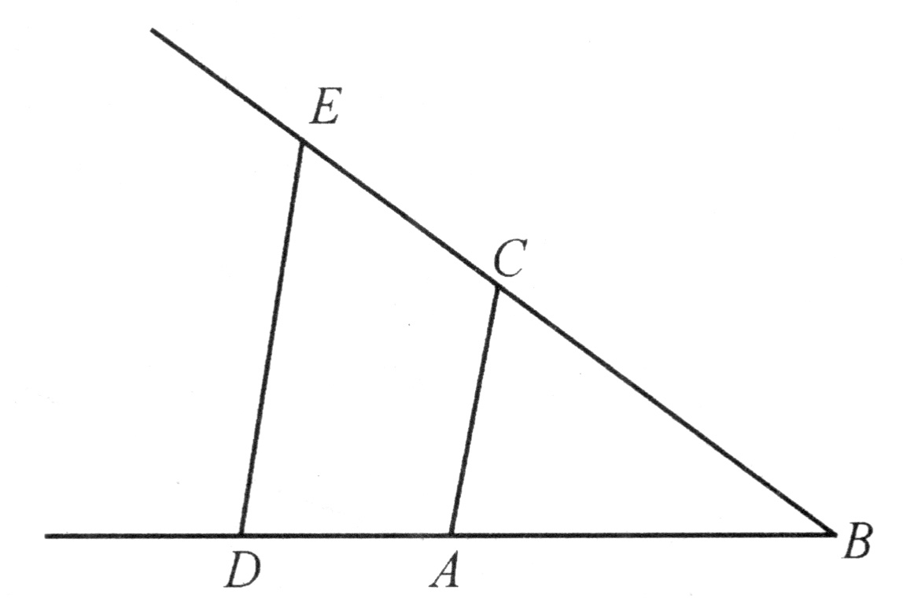
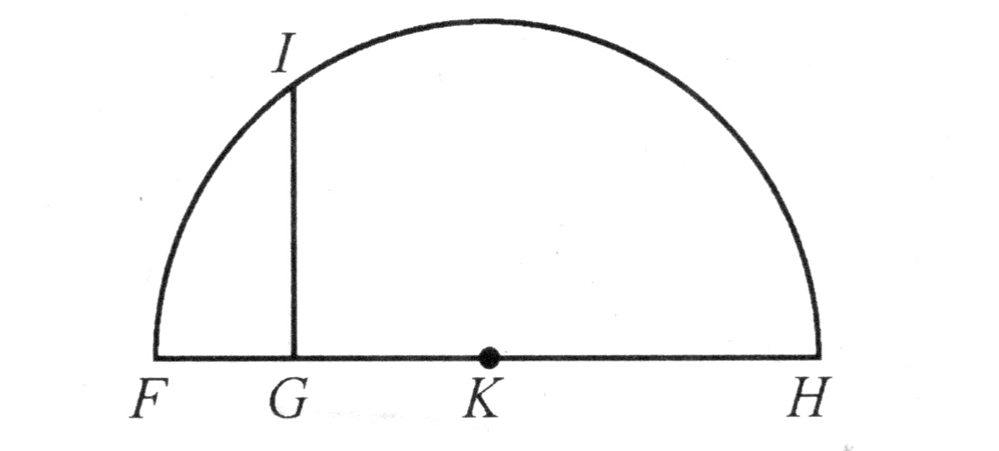
若求BD除BE，我联结E和D，引AC平行DE；则BC即为除得的结果．
若想求GH的平方根，我沿该直线加上一段等于单位长的线段FG；然后平分FH于K；我再以K为心作圆FIH，并从G引垂线延至I．那么，GI即所求的平方根．我在这里不讲立方根或其他根的求法，因为在后面讲起来更方便．
我们如何在几何中使用算术符号
通常，我们并不需要在纸上画出这些线，而只要用单个字母来标记每一条线段就够了．所以，为了作线段BD和GH的加法，我记其中的一条为a，另一条为b，并写下a+b．同样，a-b将表示从a中减去b；ab表示b乘a；a/b表示b除a；aa或a2表示a自乘；a3表示自乘所得的结果再乘a，并依此类推．[4]类似地，若求a2＋b2的平方根，我记作
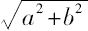
；若求a3-b3+ab2的立方根，我写成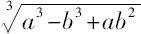
，依此可写出其他的根．[5]必须注意，对于a2，b3及类似的记号，我通常用来表示单一的一条线段，只是称之为平方、立方等而已，这样，我就可以利用代数中使用的术语了．[6]还应该注意，当所讨论的问题未确定单位时，每条线段的所有部分都应该用相同的维数来表示．a3所含的维数跟ab2或b3一样，我都称之为线段
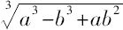
的组成部分．然而，对单位已确定的情形就另当别论了，因为不论维数的高低，对单位而言总不会出现理解上的困难；此时，若求a2b2-b的立方根，我们必须认为a2b2这个量被单位量除过一次，而b这个量被单位量乘过2次．[7]最后，为了确保能记住线段的名称，我们在给它们指定名称或改变名称时，总要单独列出名录．例如，我们可以写AB＝1，即AB等于1；[8]GH＝a，BD＝b，等等．
我们如何利用方程来解各种问题
于是，当要解决某一问题时，我们首先假定解已经得到，[9]并给为了作出此解而似乎要用到的所有线段指定名称，不论它们是已知的还是未知的．[10]然后，在不对已知和未知线段作区分的情况下，利用这些线段间最自然的关系，将难点化解，直至找到这样一种可能，即用两种方式表示同一个量．[11]这将引出一个方程，因为这两个表达式之一的各项合在一起等于另一个的各项．
我们必须找出跟假定为未知线段的数目一样多的方程；[12]但是，若在考虑了每一个有关因素之后仍得不到那样多的方程，那么，显然该问题不是完全确定的．一旦出现这种情况，我们可以为每一条缺少方程与之对应的未知线段，任意确定一个长度．[13]
当得到了若干个方程，我们必须有条不紊地利用其中的每一个，或是单独加以考虑，或是将它与其他的相比较，以便得到每一个未知线段的值；为此，我们必须先统一地进行考察，直到只留下一条未知线段，[14]它等于某条已知线段；或者是未知线段的平方、立方、四次方、五次方、六次方等中的任一个，等于两个或多个量的和或差，[15]这些量中的一个是已知的，另一些由单位跟这些平方，或立方，或四次方得出的比例中项乘以其他已知线段组成．我用下列式子来说明：
z=b
或z2＝-az+b2
或z3＝az2+b2z-c3
或z4＝az3-c3z+d4，
………………
即，z等于b，这里的z我用以表示未知量；或z的平方等于b的平方减z乘a；或z的立方等于z的平方乘以a后加z乘以b的平方，再减c的立方；其余类推．
这样，所有的未知量都可用单一的量来表示，无论问题是能用圆和直线作图的，或是能用圆锥截线作图的，甚或是能用次数不高于三或四次[16]的曲线作图的．
我在这里不作更详细的解释，否则我会剥夺你靠自己的努力去理解时所能享受的愉悦；同时，通过推演导出结论，对于训练你的思维有益，依我之见，这是从这门科学中所能获得的最主要的好处．这样做的另一个理由是，我知道对于任何熟悉普通的几何和代数的人而言，只要他们仔细地思考这篇论著中出现的问题，就不会碰到无法克服的困难．[17]
因此，我很满意如下的说法：对于一名学生来说，如果他在解这些方程时一有机会就能利用除法，那么他肯定能将问题约化到最简单的情形．
平面问题及其解
如果所论问题可用通常的几何来解决，即只使用平面上的直线和圆的轨迹[18]，此时，最后的方程要能够完全解出，其中至多只能保留有一个未知量的平方，它等于某个已知量与该未知量的积，再加上或减去另一个已知量．[19]于是，这个根或者说这条未知线段能容易地求得．例如，若我得到z2＝az+b2，[20]我便作一个直角三角形NLM，其一边为LM，它等于b，即已知量b2的平方根；另一边LN，它等于
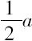
，即另一个已知量——跟我假定为未知线段的z相乘的那个量——的一半．于是，延长MN（该三角形的斜边[21]）至O，使得NO等于NL，则整个线段OM即所求的线段z．它可用如下方式表示：[22]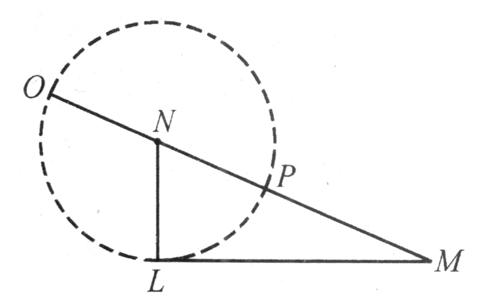
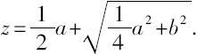
但是，若我得到y2＝-ay＋b2，其中y是我们想要求其值的量，此时我作同样的直角三角形NLM，在斜边上划出NP等于NL，剩下的PM即是所求的根y．我们写作
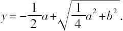
同样地，若我得到
x4＝-ax2+b2，
此时PM即是x2，我将得出
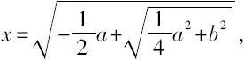
其余情形类推．
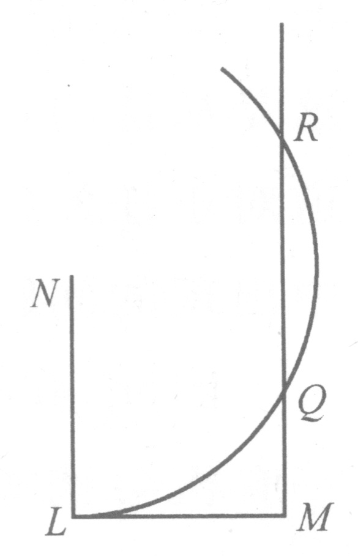
最后，若得到的是z2＝az-b2，我如前作NL等于
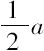
，LM等于b；然后，我不去联结点M和N，而引MQR平行于LN，并以N为心画过L的圆，交MQR于点Q和R；那么，所求线段z或为MQ，或为MR，因为此时有两种表达方式，即：[23]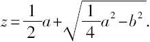
和
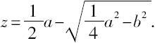
当以N为心过L的圆跟直线MQR既不相交也不相切，则方程无根，此时我们可以说这个问题所要求的作图是不可能的．
还有许多其他的方法可用来求出上述同样的根，我已给出的那些非常简单的方法说明，利用我解释过的那四种图形的作法，就可能对通常的几何中的所有问题进行作图．[24]我相信，古代数学家没有注意到这一点，否则他们不会花费那么多的劳动去写那么多的书；正是这些书中的那些命题告诉我们，他们并没有一种求解所有问题的可靠方法，[25]而只是把偶然碰到的命题汇集在一起罢了．
帕普斯的例子
帕普斯在他的第7卷书的开头所写的内容也证明了这一点．[26]在那里，他先用相当多的篇幅列出了他的前辈撰写的大量几何著作；[27]最后才提到一个问题，他说那既非欧几里得，亦非阿波罗尼奥斯或其他人所能完全解决的；[28]他是这样写的：
在稍后的地方，帕普斯叙述了这个问题：
这里，我请你顺便注意一下，迫使古代作者在几何中使用算术术语的种种考虑，未能使他们逾越鸿沟而看清这两门学科间的关系，因而在他们试图作解释时，引起了众多的含糊和令人费解的说法．
帕普斯这样写道：
这个问题始于欧几里得，由阿波罗尼奥斯加以推进，但没有哪一位得以完全解决．问题是这样的：
有三条、四条或更多条位置给定的直线，首先要求找出一个点，从它可引出另外同样多条直线段，每一条与给定直线中的某条相交成给定的角，使得由所引直线段中的两条作成的矩形，与第三条直线段（若仅有三条的话）形成给定的比；或与另两条直线段（若有四条的话）所作成的矩形形成给定的比；或者，由三条直线段所作成的平行六面体[33]与另两条跟任一给定直线段（若有五条的话）所作成的平行六面体形成给定的比，或与另三条直线段（若有六条的话）所作成的平行六面体；或者（若有七条的话）其中四条相乘所得的积与另三条的积形成给定的比，或（若有八条的话）其中四条的积与另外四条的积形成给定的比．于是，问题可以推广到有任意多条直线的情形．
因为总有无穷多个不同的点满足这些要求，所以需要发现和描绘出含有所有这些点的曲线．[34]帕普斯说，当仅给定三或四条直线时，该曲线是三种圆锥截线中的一种；但是当问题涉及更多条直线时，他并未着手去确定、描述或解释所求的线的性质．他只是进而说，古代人了解它们之中的一种，他们曾说明它是有用的，似乎是最简单的，可是并不是最重要的．这一说法促使我来作一番尝试，看能否用我自己的方法达到他们曾达到过的境界．[35]
解帕普斯问题
首先，我发现如果问题只考虑三、四或五条直线，那么为了找出所求的点，利用初等几何就够了，即只需要使用直尺和圆规，并应用我已解释过的那些原理；当然五条线皆平行的情形除外．对于这个例外，以及对于给定了六、七、八或九条直线的情形，总可以利用有关立体轨迹[36]的几何来找出所求的点，这是指利用三种圆锥截线中的某一种；同样，此时也有例外，即九条直线皆平行的情形．对此例外及给定十、十一、十二或十三条直线的情形，依靠次数仅比圆锥截线高的曲线便可找出所求的点．当然，十三条线皆平行的情形必须除外，对于它以及十四、十五、十六和十七条直线的情形，必须利用次数比刚提到的曲线高一次的曲线；余者可依此无限类推．
其次，我发现当给定的直线只有三条或四条时，所求的点不仅会出现全体都落在一条圆锥截线上的情形，而且有时会落在一个圆的圆周上，甚或落在一条直线上．[37]
当有五、六、七或八条直线时，所求的点落在次数仅比圆锥截线高一次的曲线上，我们能够想象这种满足问题条件的曲线；当然，所求的点也可能落在一条圆锥截线上、一个圆上或一条直线上．如果有九、十、十一或十二条直线，所求曲线又比前述曲线高一次，正是这种曲线可能符合要求．余者可依此无限类推．
最后，紧接在圆锥截线之后的最简单的曲线是由双曲线和直线以下面将描述的方式相交而生成的．
我相信，通过上述办法，我已完全实现了帕普斯告诉我们的、古代人所追求的目标．我将试图用几句话加以论证，耗费过多的笔墨已使我厌烦了．
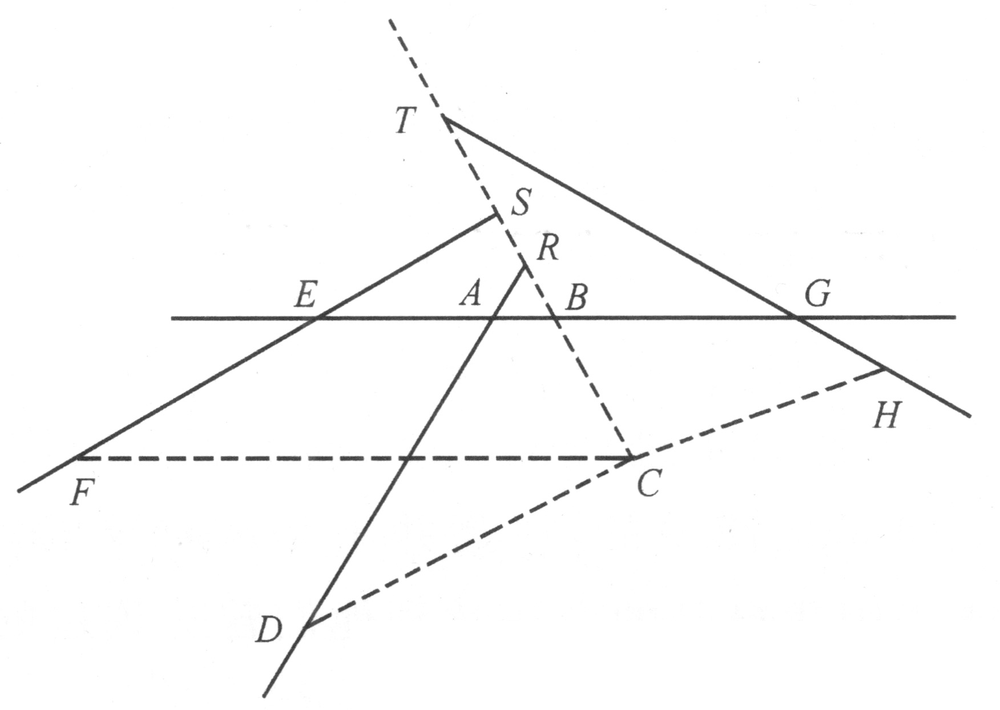
令AB，AD，EF，GH，…是任意多条位置确定的直线，[38]求点C，使得由它引出的直线段CB，CD，CF，CH，…与给定直线分别成给定的角CBA，CDA，CFE，CHG，…并且，它们中的某几条的乘积等于其余几条的乘积，或至少使这两个乘积形成一给定的比，这后一个条件并不增加问题的难度．
我们应如何选择适当的
项以得出该问题的方程
首先，我假设事情已经做完；但因直线太多会引起混乱，我可以先把事情简化，即考虑给定直线中的一条和所引直线段中的一条（例如AB和BC）作为主线，对其余各线我将参考它们去做．称直线AB在A和B之间的线段为x，称BC为y．倘若给定的直线都不跟主线平行，则将它们延长以与两条主线（如需要也应延长）相交．于是，从图上可见，给定的直线跟AB交于点A、E、G，跟BC交于点R、S、T．
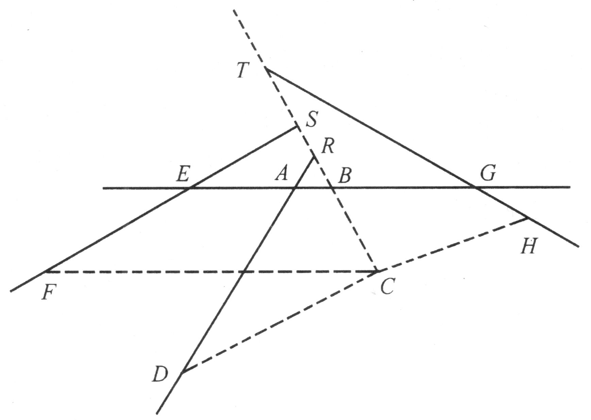
因三角形ARB的所有角都是已知的，[39]故边AB和BR的比也可知．[40]若我们令AB：BR＝z：b，因AB＝x，我们有
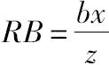
；又因B位于C和R[41]之间，我们有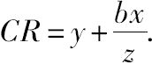
（当R位于C和B之间时，CR等于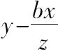
；当C位于B和R之间时，CR等于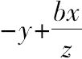
）．又，三角形DRC的三个角是已知的，[42]因此可以确定边CR和CD的比，记这个比为z：c，因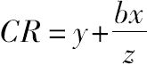
，我们有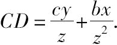
那么，由于直线AB，AD和EF的位置是确定的，故从A到E的距离已知．若我们称这段距离为k，那么EB＝k+x；虽然当B位于E和A之间时EB＝k-x，而当E位于A和B之间时EB＝-k+x．现在，三角形ESB的各角已知，BE和BS的比也可知，我们称这个比为z：d．于是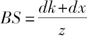
，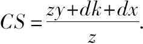
[43]当S位于B和C之间时，我们有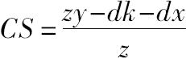
，而当C位于B和S之间时，我们有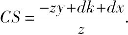
三角形FSC的各角已知，因此，CS对CF的比也可知，记作z：e．于是，CF＝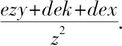
同样地，AG或l为已知，BG＝l-x．在三角形BGT中，BG对BT的比，或者说z：f为已知．因此，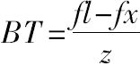
，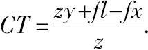
在三角形TCH中，TC对CH的比，或者说z：g也可知，[44]故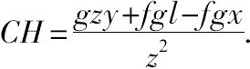
于是，你们看到，无论给定多少条位置确定的直线，过点C与这些直线相交成给定角的任何直线段的长度，总可以用三个项来表示．其一由某个已知量乘或除未知量y所组成；另一项由另外某个已知量乘或除未知量x所组成；第三项由已知量组成．[45]我们必须注意例外，即，给定的直线跟AB平行（此时含x的项消失），或跟CB平行（此时含y的项消失）的情形．这种例外情形十分简单，无须进一步解释．[46]在每一种可以想象到的组合中，这些项的符号或是+或是-．[47]
你还能看出，在由那些线段中的几条作出的乘积中，任一含x或y的项的次数不会比被求积的线段（由x和y表示）的数目大．所以，若两条线段相乘，没有一项的次数会高于2；若有三条线段，其次数不会高于3，依此类推，无一例外．
当给定的直线不超过五条时，
我们如何知道相应的问题是平面问题
进而，为确定点C，只需一个条件，即某些线段的积与其他某些线段的积，或者相等或者（也是相当简单的）它们的比为一给定的值．由于这个条件可以用含有两个未知量的一个方程表示，[48]所以我们可以随意给x或y指定一个值，再由这个方程求出另一个的值．显然，当给定的直线不多于五条时，量x——它不用来表示问题中原有的那些直线段——的次数绝不会高于2．[49]
给y指定一个值，我们得x2＝±ax±b2，因此x可以借助直尺和圆规，按照已经解释过的方法作出．那么，当我们接连取无穷多个不同的线段y的值，我们将得到无穷多个线段x的值，因此就有了无穷多个不同的点C，所求曲线便可依此画出．
这个方法也适用于涉及六条或更多直线的问题，如果其中某些直线跟AB或BC中的任一条平行的话；此时，或者x，或者y的次数在方程中只是2，所以点C可用直尺和圆规作出．
另一方面，若给定的直线都平行，即使问题仅涉及五条直线，点C也不可能用这种办法求得．因为，由于量x根本不在方程中出现，所以不再允许给y指定已知的值，而必须去求出y的值．[50]又因为此时y的项是三次的，其值只需求解一个三次方程的根便可得到，三次方程的根一般不用某种圆锥截线是不能求得的．
进而，若给定的直线不超过9条，它们不是彼此平行的，那么方程总能写成次数不高于4的形式．这样的方程也总能够利用圆锥截线，并按照我将要解释的方法去求解．
若直线的数目不超过13，则可利用次数不超过6的方程，它的求解可依靠只比圆锥截线的次数高一次的曲线，并按照将要解释的方法去做．[51]
至此，我已完成了必须论证的第一部分内容，但在进入第二部分之前，还必须一般性地阐述一下曲线的性质．
哪些曲线可被纳入几何学
古代人熟悉以下事实，几何问题可分成三类，即平面的、立体的和线的问题．[52]这相当于说，某些问题的作图只需要用到圆和直线，另一些需要圆锥截线，再有一些需要更复杂的曲线．[53]然而，令我感到吃惊的是他们没有再继续向前，没有按不同的次数去区分那些更复杂的曲线；我也实在不能理解他们为什么把最后一类曲线称作机械的而不称作几何的．[54]
如果我们说，他们是因为必须用某种工具[55]才能描绘出这种曲线而称其为机械的，那么为了协调一致，我们也必须拒绝圆和直线了，因为它们非用圆规和直尺才能在纸上画出来，而圆规、直尺也可以称作工具．我们也不能说因为其他工具比直尺和圆规复杂故而不精密；若这样认为，它们就该被排除出机械学领域，作图的精密性在那里甚至比在几何中更重要．在几何中，我们只[56]追求推理的准确性，讨论这种曲线就像讨论更简单的曲线一样，都肯定是绝对严格的．[57]我也不能相信是因为他们不愿意超越那两个公设，即：（1）两点间可作一直线，（2）绕给定的中心可作一圆过一给定的点．他们在讨论圆锥截线时，就毫不犹豫地引进了这样的假设：任一给定的圆锥可用给定的平面去截．现在，为了讨论本书引进的所有曲线，我想只需引入一条必要的假设，即两条或两条以上的线可以一条随一条地移动，并由它们的交点确定出其他曲线．这在我看来决不会更困难．[58]
真的，圆锥截线被接纳进古代的几何，恐怕绝非易事，[59]我也不关心去改变由习惯所认定的事物的名称；无论如何，我非常清楚地知道，若我们一般地假定几何是精密和准确的，那么机械学则不然；[60]若我们视几何为科学，它提供关于所有物体的一般的度量知识；那么，我们没有权力只保留简单的曲线而排除复杂的曲线，倘若它们能被想象成由一个或几个连续的运动所描绘，后者中的每一个运动完全由其前面的运动所决定——通过这种途径，总可以得到涉及每一个运动的量的精确知识．
也许，古代几何学拒绝接受比圆锥截线更复杂的曲线的真正理由在于，首先引起他们注意的第一批这类曲线碰巧是螺线、[61]割圆曲线[62]以及类似的曲线，它们确实只归属于机械学，而不属于我在这里考虑的曲线之列，因为它们必须被想象成由两种互相独立的运动所描绘，而且这两种运动的关系无法被精确地确定．尽管他们后来考查过蚌线、[63]蔓叶线[64]和其他几种应该能被接受的曲线；但由于对它们的性质知之不多，他们并没有比之其他曲线给予更多的思考．另一方面，他们可能对圆锥截线所知不多，[65]也不了解直尺和圆规的许多可能的作图，因此还不敢去做更困难的事情．我希望从今以后，凡能巧妙地使用这里提到的几何方法的人，不会在应用它们解决平面或立体问题时遇到大的困难．因此，我认为提出这一内容更加广泛的研究方向是适宜的，它将为实践活动提供充分的机会．
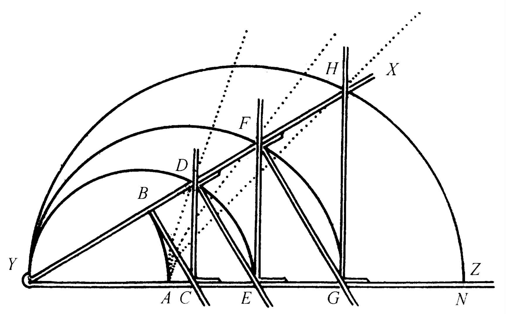
考虑直线AB，AD，AF，等等，我们假设它们可由工具YZ所描绘．该工具由几把直尺按下述方式绞接在一起组合而成：沿直线AN放置YZ，角XYZ的大小可增可减，当它的边集拢后，点B，C，D，E，F，G，H全跟A重合；而当角的尺寸增加时，跟XY在点B固定成直角的直尺BC，将直尺CD向Z推进，CD沿YZ滑动时始终与它保持成直角．类似地，CD推动DE，后者沿XY滑动时始终与BC平行；DE推动EF；EF推动FG；FG推动GH，等等．于是，我们可以想象有无穷多把尺子，一个推动另一个，其中有一半跟XY保持相等的角度，其余的跟YZ保持等角．
当角XYZ增加时，点B描绘出曲线AB，它是圆；其他直尺的交点，即点D，F，H描绘出另外的曲线AD，AF，AH，其中后两条比第一条复杂，第一条比圆复杂．无论如何，我没有理由说明为什么不能像想象圆的描绘那样，清晰明了地想象那第一条曲线[66]，或者，至少它能像圆锥截线一样明白无误；同样，为什么这样描绘出的第二条、第三条[67]，以至其他任何一条曲线不能如想象第一条那样清楚呢？因此，我没有理由在解几何问题时不一视同仁地使用它们．[68]
区分所有曲线的类别，以及掌握
它们与直线上点的关系的方法
我可以在这里给出其他几种描绘和想象一系列曲线的方法，其中每一条曲线都比它前面的任一条复杂，[69]但是我想，认清如下事实是将所有这些曲线归并在一起并依次分类的最好办法：这些曲线——我们可以称之为“几何的”，即它们可以精确地度量——上的所有的点，必定跟直线上的所有的点具有一种确定的关系，[70]而且这种关系必须用单个的方程来表示．[71]若这个方程不包含次数高于两个未知量所成的矩形或一个未知量的平方的项，则曲线属于第一类，即最简单的类，[72]它只包括圆、抛物线、双曲线和椭圆；当该方程包含一项或多项两个未知量[73]中的一个或两个的三次或四次[74]的项，（因方程需要两个未知量来表示两点间的关系），则曲线属于第二类；当方程包含未知量中的一个或两个的五次或六次的项，则曲线属于第三类，依此类推．
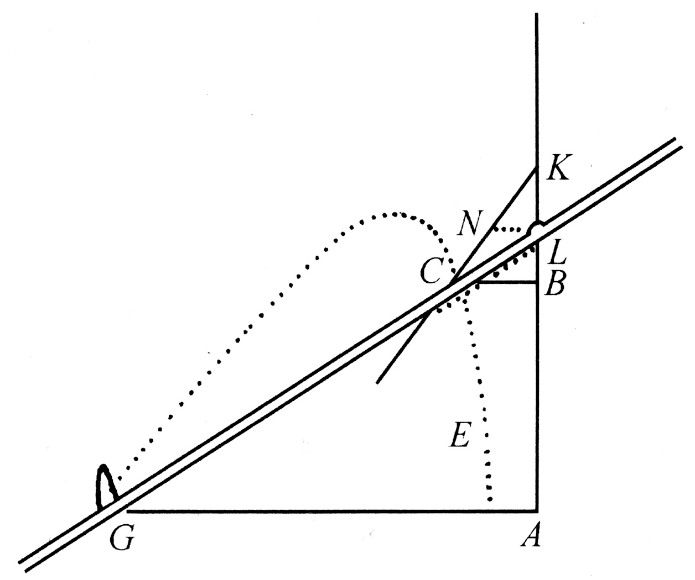
设EC是由直尺GL和平面直线图形CNKL的交点所描绘出的曲线；直线图形的边KN可朝C的方向任意延长，图形本身以如下方式在同一平面内移动：其边[75]KL永远跟直线BA（朝两个方向延长）的某个部分相重，并使直尺GL产生绕G的转动（该直尺与图形CNKL在L处铰接）．[76]当我想弄清楚这条曲线属于哪一类时，我要选定一条直线，比如AB，作为曲线上所有点的一个参照物；并在AB上选定一个点A，由此出发开始研究．[77]我在这里可以说“选定这个选定那个”，因为我们有随意选择的自由；若为了使所得到的方程尽可能地短小和简单，我们在作选择时必须小心从事，但不论我选哪条线来代替AB，可以证明所得曲线永远属于同一类，而且证明并不困难．[78]
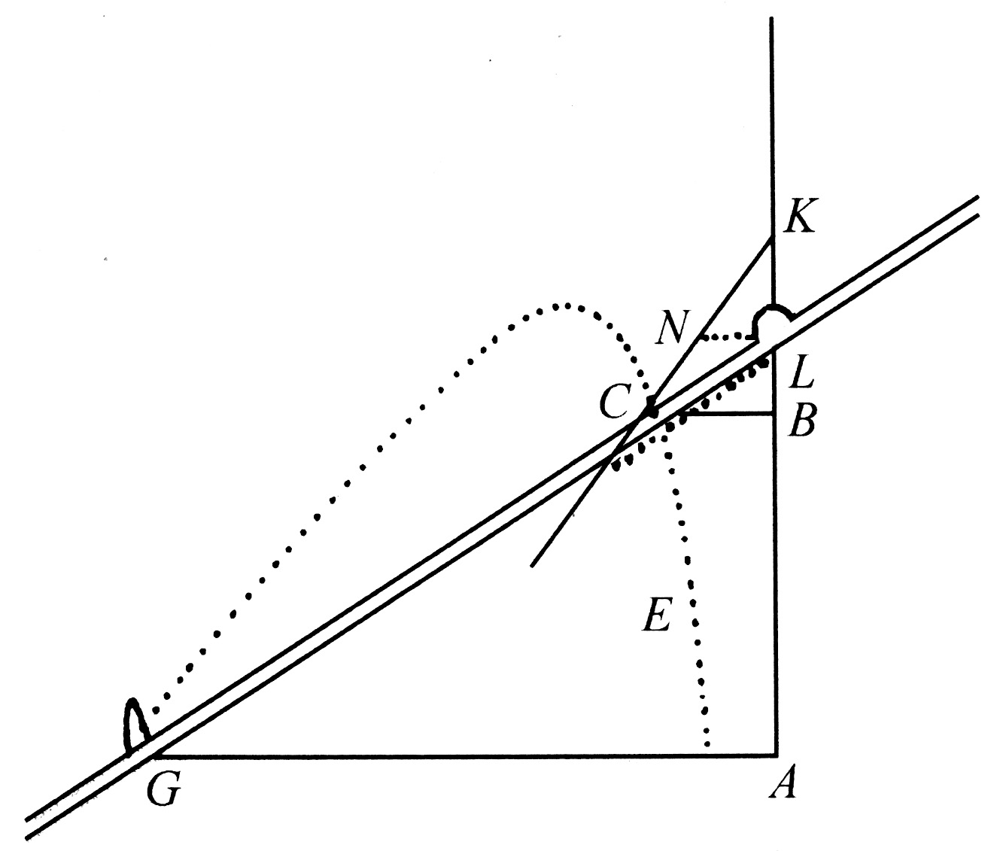
然后，我在曲线上任取一点，比如C，我们假设用以描绘曲线的工具经过这个点．我过C画直线CB平行于GA．因CB和BA是未知的和不确定的量，我称其中之一为y，另一个为x．为了得到这些量之间的关系，我还必须考虑用以决定该曲线作图的一些已知量，比如GA，我称之为a；KL，我称之为b；平行于GA的NL，我称之为c．于是，我说NL比LK（即c比b）等于CB（即y）比BK，因此BK等于
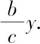
故BL等于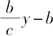
，AL等于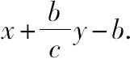
进而，CB比LB（即y比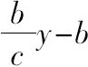
）等于AG（或a）比LA（或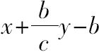
）．用第三项乘第二项，我们得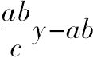
，它等于x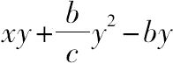
，后者由最后一项乘第一项而得．所以，所求方程为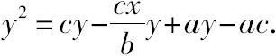
根据这个方程，我们知曲线EC属于第一类，事实上它是双曲线．[79]
若将上述描绘曲线的工具中的直线图形CNK用位于平面CNKL的双曲线或其他第一类曲线替代，则该曲线与直尺GL的交点描绘出的将不是双曲线EC，而是另一种属于第二类的曲线．
于是，若CNK是中心在L的圆，我们将描绘出古人可知的第一条蚌线；[80]若利用以KB为轴的抛物线，我们将描绘出我已提到过的最主要的也是最简单的曲线，它们属于帕普斯问题所求的解，即当给定五条位置确定的直线时的解．
若利用一条位于平面CNKL上的第二类曲线来代替上述第一类曲线，我们将描绘出一条第三类曲线；而要是利用一条第三类曲线，则将得到一条第四类曲线，依此类推，直至无穷．[81]上述论断不难通过具体计算加以证明．
无论如何，我们可以想象已经描绘出一条曲线，它是我称之为几何曲线中的一条；用这种方法，我们总能找到足以决定曲线上所有点的一个方程．现在，我要把其方程为四次的曲线跟其方程为三次的曲线归在同一类中；把其方程为六次的[82]跟其方程为五次的[83]曲线归在一类，余者类推．这种分类基于以下事实：存在一种一般的法则，可将任一个四次方程化为三次的，任一六次方程化为五次方程[84]，所以，无需对每一情形中的前者作比后者更繁复的考虑．
然而，应该注意到，对任何一类曲线，虽然它们中有许多具有同等的复杂性，故可用来确定同样的点，解决同样的问题，可是也存在某些更简单的曲线，它们的使用范围也更有限．在第一类曲线中，除了具有同等复杂性的椭圆、双曲线和抛物线，还有圆——它显然是较为简单的曲线；在第二类曲线中，我们有普通的蚌线，它是由圆和另外一些曲线描绘的，它尽管比第二类中的许多曲线简单[85]，但并不能归入第一类．[86]
对上篇提到的帕普斯问题的解释
在对一般的曲线分类之后，我很容易来论证我所给出的帕普斯问题的解．因为，首先我已证明当仅有三条或四条直线时，用于确定所求点[87]的方程是二次的．由此可知，包含这些点的曲线必属于第一类，其理由是这样的方程表示第一类曲线上的所有点和一条固定直线上的所有点之间的关系．当给定直线不超过八条时，方程至多是四次的，因此所得曲线属于第二类或第一类．当给定直线不超过十二条时，方程是六次或更低次的，因此所求曲线属于第三类或更低的类．其他情形可依此类推．
另一方面，就每一条给定直线而言，它可以占据任一处可能想象得到的位置，又因为一条直线位置的改变会相应地改变那些已知量的值及方程中的符号+与-，所以很清楚，没有一条第一类曲线不是四线问题的解，没有一条第二类曲线不是八线问题的解，没有一条第三类曲线不是十二线问题的解，等等．由此可知，凡能得到其方程的所有几何曲线，无一不能作为跟若干条直线相联系的问题的解．[88]
仅有三线或四线时该问题的解
现在需要针对只有三条或四条给定直线的情形作更具体的讨论，对每个特殊问题给出用于寻找所求曲线的方法．这一研究将表明，第一类曲线仅包含圆和三种圆锥截线．
再次考虑如前给定的四条直线AB，AD，EF和GH，求点C描出的轨迹，使得当过点C的四条线段CB，CD，CF和CH与给定直线成定角时，CB和CF的积等于CD和CH的积．这相当于说：若
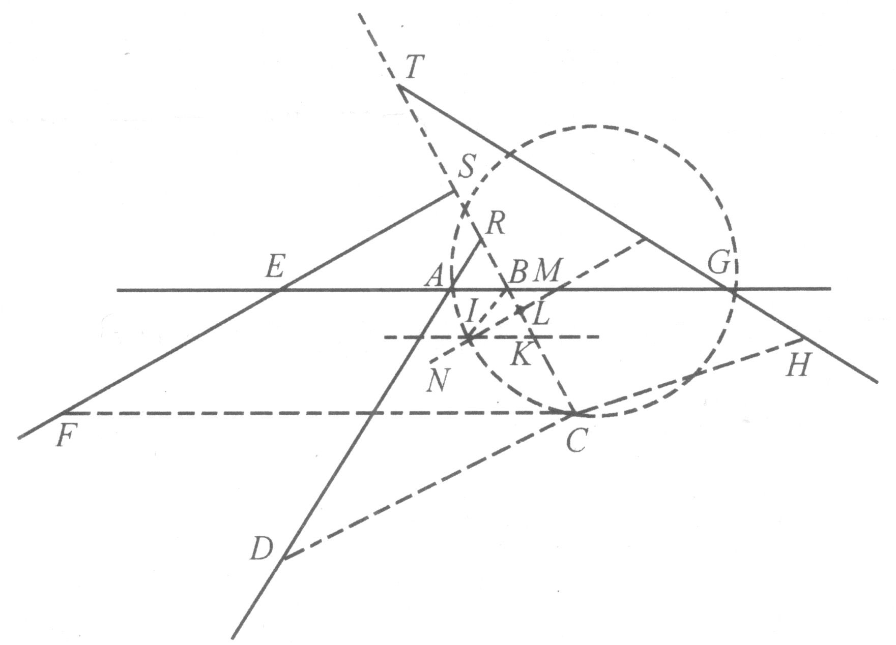
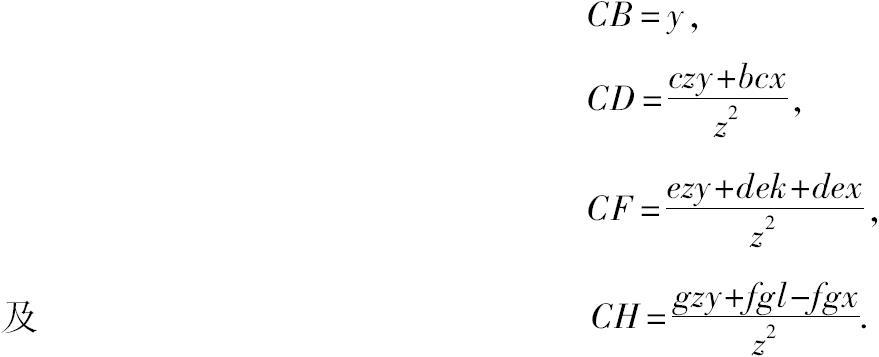
于是，方程为
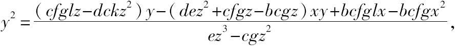
此处假定ez大于cg；否则所有的符号+和-都必须掉换．[89]在这个方程中，若y为零或比虚无还小，[90]并假定点C落在角DAG的内部，那么为导出这一结论，必须假定C落在角DAE、EAR或RAG中的某一个之内，且要将符号改变．若对这四种位置中的每一个，y都等于零，则问题在所指明的情形下无解．
让我们假定解可以得到；为了简化推导，让我们以2m代替
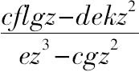
，以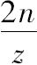
代替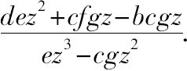
于是，我们有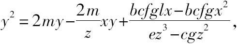
其根[91]为
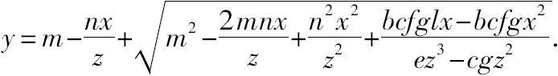
还是为了简洁，记
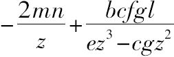
为o，等于；对于这些已给定的量，我们可随意按某一种记号来表示它们．[92]于是，我们有这就给出了线段BC的长度，剩下AB或x是尚未确定的．因为现在的问题仅涉及三条或四条直线，显然，我们总可得到这样的一些项，尽管其中某些可能变成零，或者符号可能完全变了．[93]
接着，我作KI平行且等于BA，在BC上截取一段BK等于m（因BC的表示式含+m；若它是-m，我将在AB的另一边作IK；[94]而当m是零时，我就根本不去画出IK）．我再作IL，使得IK：KL＝z：n；即，使得当IK等于x时，KL等于用同样的方法，我可以知道KL对IL的比，称为n：a，所以，若KL等于，则IL等于因为该方程含有，我可在L和C之间取点K；若方程所含为，我就应该在K和C之间取L；[95]而当等于零时，我就不画IL了．
做完上述工作，我就得到表达式
据此可画出LC．很清楚，若此式为零，点C将落在直线IL上；[96]若它是个完全平方，即当m2和两者皆为+[97]而o2等于4pm，或者m2和ox（或ox和）皆为零，则点C落在另一直线上，该直线的位置像IL一样容易确定．[98]
若无这些例外情形发生，[99]点C总是或者落在三种圆锥截线的一种之上，或是落在某个圆上，该圆的直径在直线IL上，并有直线段LC齐整地附在这条直径上，[100]另一方面，直线段LC与一条直径平行，而IL齐整地附在它上面．
特别地，若这项为零，圆锥截线应是抛物线；若它前面是加号，则得双曲线；最后，若它前面是减号，则得一个椭圆．当a2m等于pz2而角ILC是直角时[101]出现例外情形，此时我们得到一个圆而非椭圆．[102]
当圆锥截线是抛物线时，其正焦弦等于，其直径总是落在直线IL上．[103]为了找出它的顶点N，作IN等于，使得m为正并且ox亦为正时，点I落在L和N之间；而当m为正并且ox为负时，L落在I和N之间；而当m2为负并且ox为正时，N落在I和L之间．可是，当各个项像上面那样安排时，m2不可能为负．最后，若m2等于零，点N和I必定相重．所以，根据阿波罗奥斯著作的第一篇中的第一个问题，很容易确定这是抛物线．[104]
然而，当所求轨迹是圆、椭圆或双曲线时，[105]必须首先找出图形的中心，点M．它总是落在直线IL上，可以取IM等于而求得．若o等于零，则M和I相重．当所求轨迹是圆或椭圆时，若ox项为正，则M和L必落在I的同侧，而若ox为负，则它们必落在异侧．另一方面，对于双曲线的情形，若ox为负，则M和L落在I的同侧．若ox为正，则它们落在异侧．
当m2为正、轨迹是圆或椭圆，或者m2为负而轨迹是双曲线时，图形的正焦弦必定为
而当所求轨迹是圆或椭圆、m2为负时，或者轨迹是双曲线、o2大于4mp，且m2为正时，它必定为
但是，若m2等于零，则正焦弦为；又若oz等于零[106]，则它为
为得到相应的直径，必须找出跟正焦弦之比为的直线；即，若正焦弦为
直径应为
无论哪一种情形，该圆锥截线的直径都落在IM上，LC是齐整地附于其上的线段之一．[107]可见，取MN等于直径的一半，并取N和L在M的同侧，则点N将是这条直径的端点．[108]所以，根据阿波罗尼奥斯著作第一篇中的第二和第三个问题，确定这条曲线是轻而易举的事．[109]
若轨迹是双曲线[110]且m2为正，则当o2等于零或小于4pm时，我们必须从中心M引平行于LC的直线MOP及平行于LM的CP，并取MO等于
而当ox等于零时，必须取MO等于m．考虑O为这条双曲线的顶点，直径是OP，齐整地附于其上的线段是CP，其正焦弦为
其直径[111]为
我们必须考虑ox等于零这种例外情形，此时正焦弦为，直径为2m．从这些数据出发，根据阿波罗尼奥斯著作的第一篇中的第三个问题，可以确定这条曲线．[112]
对该解的论证
以上陈述的证明都十分简单．因为，像正焦弦、直径、直径NL或OP上的截段这些上面给出的量，使用阿波罗尼奥斯第一篇中的定理11、12和13就能作出它们的乘积[113]，所得结果将正好包含这样一些项，它们表示直线段CP的平方或者说CL，那是直径的纵标线[114]．
在这种情形下，我们应从NM或者说从跟它相等的量
中除去IM，即在余下的IN上加IL，或者说加，我们得
以该曲线的正焦弦乘上式，我们得一矩形的值
并从中减去一个矩形，该矩形与NL的平方之比等于正焦弦与直径之比．NL的平方为
因为这些项表示直径与正焦弦之比，我们可用a2m除上式，并以pz2乘所得的商，结果为
我们再从上面所得的矩形中减去此量，于是CL的平方等于．由此可得，CL是附于直径的截段NL上的椭圆或圆的纵标线．
设所有给定的量都以数值表示，如EA＝3，AG＝5，AB＝BR，BS＝，GB＝BT，CD＝，CF＝2CS，CH＝，角ABR＝60°；并令CB·CF＝CD·CH．如果要使问题完全确定，所有这些量都必须是已知的．现令AB＝x，CB＝y．用上面给出的方法，我们将得到
此时BK必须等于1，KL必须等于KI的二分之一；因为角IKL和ABR都是60°，而角KIL（它等于角KIB或IKL的一半）是30°，故角ILK是直角．因为IK＝AB＝x，KL＝，IL＝，上面以z表示的量为1，我们得a＝，m=1，o=4，，由此可知IM＝，NM＝；又因a2m（它为）等于pz2，角ILC是直角，由此导出曲线NC是圆．对其他任何一种情形的类似讨论，不会产生困难．
平面与立体轨迹，以及求解它们的方法
由于所有不高于二次的方程都已包括在上述讨论之中，所以，我们不仅完全解决了古代人有关三线与四线的问题，而且也完全解决了他们所谓的立体轨迹的作图问题；这自然又解决了平面轨迹的作图，因为后者包含在立体轨迹之中．[115]解任何这类轨迹问题，无非是去找出一种状态所要求的一个完全确定的点，整条线上所有的点满足其他状态所提出的要求（正如已举的例子所表明的那样）．如果这条线是直线或圆，就说它是平面轨迹；但如果它是抛物线、双曲线或椭圆，就称它是立体轨迹．对于每一种情形，我们都能得到包含两个未知量的一个方程，它完全跟上面找出的方程类似．若所求的点位于其上的曲线比圆锥截线的次数高，我们同样可称之为超立体轨迹，[116]余者类推．如果在确定那个点时缺少两个条件，那么点的轨迹是一张面，它可能是平面、球面或更复杂的曲面．古人的努力没有超越立体轨迹的作图；看来，阿波罗尼奥斯写他的圆锥截线论著的唯一目的是解立体轨迹问题．
我已进一步地说明了，我称作第一类曲线的只包括圆、抛物线、双曲线和椭圆．这就是我所论证的内容．
对五线情形解这一古代问题
所需曲线中最基本、最简单的曲线
若古人所提出的问题涉及五条直线，而且它们全都平行，那么很显然，所求的点将永远落在一条直线上．假设所提问题涉及五条直线，而且要求满足如下条件：
（1）这些直线中的四条平行，第五条跟其余各条垂直；
（2）从所求点引出的直线与给定的直线成直角；
（3）由所引的与三条平行直线相交的三条线段作成的平行六面体[117]必须等于另三条线段作成的平行六面体，它们是所引的与第四条平行线相交的线段、所引的与垂直直线相交的线段，以及某条给定的线段．
除了前面指出的例外情况，这就是最简单的可能情形了．所求的点将落在由抛物线以下述方式运动所描出的曲线上：
令所给直线为AB，IH，ED，GF和GA．设所要找的点为C，使得当所引的CB，CF，CD，CH和CM分别垂直于给定直线时，三条线段CF，CD和CH作成的平行六面体应等于另两条线段CB、CM跟第三条线段AI所作成的平行六面体．令CB＝y，CM＝x，AI及AE及GE＝a；因此，当C位于AB和DE之间时，我们有CF＝2a-y，CD＝a-y，CH＝y+a．将三者相乘，我们得到y3-2ay2-a2y+2a3等于其余三条线段的积，即等于axy．
接着，我将考虑曲线CEG．我想象它是由抛物线CKN（让它运动但使其直径KL总落在直线AB上）和直尺GL（它绕点G旋转，但始终过点L并保持在抛物线所在的平面内[118]）的交点所描绘出的．我取KL等于a，令主正焦弦——对应于所给抛物线的轴的正焦弦——也等于a，并令GA＝2a，CB或MA＝y，CM或AB＝x．因三角形GMC和CBL相似，GM（或2a-y）比MC（或x）等于CB（或y）比BL，因此BL等于因KL为a，故BK为或最后，因这同一个BK又是抛物线直径上的截段，BK比BC（它的纵标线）等于BC比a（即正焦弦）．由此，我们得到y3-2ay2-a2y+2a3＝axy，故C即所求的点．
点C可以在曲线CEG，或它的伴随曲线cEGc的任何部分之上取定；后一曲线的描绘方式，除了令抛物线的顶点转到相反的方向[119]之外，其余都和前者相同；点C也可以落在它们的配对物NIo和nIO上，NI和nIO由直线GL和抛物线KN的另一支的交点所生成．
其次，设给定的平行线AB、IH、ED和GF彼此之间的距离互不相等，且不与GA垂直，而过C的直线段与给定直线亦不成直角．在这种情形下，点C将不会永远落在恰好具有同样性质的曲线上．甚至对于没有两条给定直线是平行的情形，也可能导致这种后果．
再其次，设我们有四条平行直线，第五条直线与它们相交，过点C引出的三条线段（一条引向第五条直线，两条引向平行线中的两条）所作成的平行六面体等于另一平行六面体，后者由过C所引的分别到达另两条平行线的两条线段和另一条给定线段作成．这种情形，所求点C将落在一条具有不同性质的曲线上，[120]即所有到其直径的纵标线等于一条圆锥截线的纵标线，直径上在顶点与纵标线[121]之间的线段跟某给定线段之比等于该线段跟圆锥截线的直径上具有相同纵标线的那一段的比．[122]
我不能说，这条曲线比前述的曲线复杂；确实，我总觉得前者应首先考虑，因为它的描绘及其方程的确定多少要容易些．
我不再仔细讨论相应于其他情形的曲线，因为我一直没有对这课题进行完全的论述．由于已经解释过确定落在任一曲线上的无穷多个点的方法，我想我已提供了描绘这些曲线的方法．
经由找出其上若干点而描绘的几何曲线
值得一提的是，这种由求出曲线上若干点而描出曲线的方法[123]，跟用来描绘螺线及其类似曲线的方法有极大差异；[124]对于后者，并不是所求曲线上面的任何一点都能随意求得的，可求出的只是这样一些点，它们能由比作出整条曲线所需的办法更简单的方法所确定．因此，严格地说，我不可能求出曲线上的任何一个点；亦即所有要找的点中没有一个是曲线上的特殊点，它能不借助曲线本身而求得．另一方面，这些曲线上不存在这样的点，它能为无法使用我已给出的方法解决的问题提供解答．
可利用细绳描绘的曲线
但是，通过任意地取定曲线上的一些点而描出曲线的方法，只适用于有规则的和连续的运动所生成的曲线，这一事实并不能成为把它们排除出几何的正当理由．我们也不应该拒绝这样的方法，[125]即，使用细绳或绳环以比较从所求曲线上的一些点到另外一些点间所引的两条或多条直线段是否相等，[126]或用于跟其他直线作成固定大小的角．在《折光》[127]一文中，我在讨论椭圆和双曲线时已使用了这种方法．
另一方面，几何不应包括像细绳那样有时直有时弯的线；由于我们并不知道直线与曲线之间的比，而且我相信这种比是人的智力所无法发现的，[128]因此，不可能基于这类比而得出严格和精确的结论．无论如何，因为细绳还能用于仅需确定其长度为已知的线段的作图，所以不应被完全排除．
为了解曲线的性质，必须知道其上的点与直线上点
的关系；在各点引与该曲线成直角的曲线的方法
当一条曲线上的所有点和一条直线上的所有点之间的关系已知时，[129]用我解释过的方法，我们很容易求得该曲线上的点和其他所有给定的点和线的关系，并从这些关系求出它的直径、轴、中心和其他对该曲线有特殊重要性的线[130]或点；然后再想出各种描绘该曲线的途径，并采用其中最容易的一种．
仅仅依靠这种方法，我们就可求得凡能确定的、有关它们的面积大小的量；[131]对此，我没有必要作进一步的解释．
最后，曲线的所有其他的性质，仅依赖于所论曲线跟其他线相交而成的角．而两条相交曲线所成的角将像两条直线间的夹角一样容易度量，倘若可以引一条直线，使它与两曲线中的一条在两曲线交点处成直角的话．[132]这就有理由使我相信，只要我给出一种一般的方法，能在曲线上任意选定的点引直线与曲线交成直角，我对曲线的研究就完全了．我敢说，这不仅是我所了解的几何中最有用的和最一般的问题，而且更是我一直祈求知道的问题．
求一直线与给定曲线相交并成直角的一般方法
设CE是给定的曲线，要求过点C引一直线与CE成直角．假设问题已经解决，并设所求直线为CP．延长CP至直线GA，使CE上的点和GA上的点发生联系．[133]然后，令MA＝CB＝y；CM＝BA＝x．我们必须找到一个方程来表示x和y的关系．[134]我令PC＝s、PA＝v，因此PM＝v-y．因PMC是直角，我们便知斜边的平方s2等于两直角边的平方和x2+v2-2vy+y2．即x=或y＝依据最后两个方程，我可以从表示曲线CE上的点跟直线GA上的点之间关系的方程中，消去x和y这两个量中的一个．若要消去x很容易，只要在出现x的地方用代替，x2用此式的平方代替，x3用它的立方代替，…，而若要消去y，必须用代替y，y2、y3则用此式的平方、立方代替，…．结果将得到仅含一个未知量x或y的方程．
例如，若CE是个椭圆，MA是其直径上的截段，CM是其纵标线，r是它的正焦弦，q是它的贯轴，[135]那么，据阿波罗尼奥斯的第一篇中的定理13，[136]我们有消去x2，所得方程为
或
在这一情形，最好把整个式子看成是单一的表达式，而不要看成由两个相等的部分所组成．[137]
若CE是由已讨论过的由抛物线的运动所生成的曲线，当我们用b代表GA、c代表KL、d代表抛物线的直径KL的正焦弦时，表示x和y之间关系的方程为y3-by2-cdy+bcd+dxy＝0．消去x，我们得
将该式平方，各项按y的次数排列，[138]上式变为
其他情形可类推．若所论曲线上的点不是按已解释过的方式跟一条直线上的点相联系，而是按其他某种方式相联系，[139]那么也同样能找出一个方程．
令CE是按如下方式与点F、G和A相联系的曲线：从其上任一点（比如C）引出的至F的直线段超出线段FA的量，与GA超出由C引至G的线段的量，形成一个给定的比．[140]令GA＝b，AF＝c；现在任取曲线上一点C，令CF超出FA的量跟GA超出GC的量之比为d比e．于是，当我们用z表示尚未确定的量，那么，FC＝c+z且令MA＝y，则GM＝b-y，FM＝c+y．因CMG是直角三角形，从GC的平方中减去GM的平方，我们得到余下的CM的平方，或其次，从FC的平方中减去FM的平方，我们得到另一种方式表示的CM的平方，即z2+2cz-2cy-y2．这两个表达式相等，由此导出y或MA的值，它为
利用此值代替表示CM平方的式子中的y，我们得
如果我们现在设直线PC在点C与曲线交成直角，并像以前一样，令PC＝s、PA＝v，则PM等于v-y；又因PCM是直角三角形，我们知CM的平方为s2-v2+2vy-y2．让表示CM平方的两个值相等，并以y的值代入，我们便得所求的方程为
已经找出的这个方程，[141]其用处不是确定x，y或z，它们是已知的，因为点C是取定了的；我们用它来求v或s，以确定所求的点P．为此目的，请注意当点P满足所要求的条件时，以P为心并经过点C的圆将与曲线CE相切触而不穿过它；但只要点P离开它应在的位置而稍微靠近或远离A，该圆必定穿过这条曲线，其交点不仅有C，而且还有另一个点．所以，当这个圆穿过CE，含有作为未知量的x和y的方程（设PA和PC为已知）必有两个不等的根．例如，假设该圆在点C和点E处穿过曲线．引EQ平行于CM．然后，可用x和y分别表示EQ和QA，正如它们曾被用来表示CM和MA一样；因为PE等于PC（同一个圆的半径），当我们寻求EQ和QA（假设PE和PA是给定的）时，我们应得到跟寻求CM和MA（假设PC和PA是给定的）时所得到的同样的方程．由此可知，x的值，或y的值，或任何其他一个这种量的值，在这个方程中都取双值，即，方程将有两个不相等的根．若求x的值，这两个根中的一个将是CM，另一个是EQ；而求y的值时，一个根将是MA，另一个是QA．肯定，当E不像C那样跟曲线在同一侧，它们之中便只有一个是真根，另一个将画在相反的方向上，或者说它比虚无还小．[142]然而，当点C和点E更靠近时，两根的差也就更小；当两个点重合时，两个根恰好相等，也就是说，过C的圆将在点C与曲线相切而不穿过它．
进而可知，当方程有两个相等的根时，方程的左端在形式上必定类似于这样的式子，即当已知量等于未知量时，它取未知量与已知量的差自乘的形式；[143]那么，若最终所得的式子的次数达不到最初那个方程的次数，就可以用另一个式子来乘它，使之达到相同的次数．这最后一步使得两个表达式得以一项一项地对应起来．
例如，我可以说，目前的讨论中找出的第一个方程，[144]即
它必定跟如下方式得到的式子具有相同的形式：取e＝y，令（y-e）自乘，即y2-2ey+e2．然后，我们可以逐项比较这两个表达式：因为各式中的第一项y2相同，第一式中的第二项[145]等于第二式中的第二项-2ey；由此可解出v或PA，我们得；或者，因为我们已假定e等于y，故用同样的方法，我们可以从第三项来求s；因为v完全确定了P，这就是所要求的一切，因此无需再往下讨论．[146]
同样，对于上面求得的第二个方程，[147]即
y6-2by5+（b2-2cd+d2）y4+（4bcd-2d2v）y3
+（c2d2-2b2cd+d2v2-d2s2）y2-2bc2d2y+b2c2d2，
它必定跟用y4+fy3+g2y2+h3y+k4乘y2-2ey+e2所得的式子具有相同的形式，后者形如
y6+（f-2e）y5+（g2-2ef+e2）y4+（h3-2eg2+e2f）y3
+（k4-2eh3+e2g2）y2+（e2h3-2ek4）y+e2k4．
从这两个方程出发可得到另外六个方程，用于确定六个量f，g，h，k，v和s．容易看出，无论给定的曲线可能属于哪一类，这种方法总能提供跟所需考虑的未知量的数目一样多的方程．为了解这些方程，并最终求出我们真正想要得到的唯一的量v的值（其余的仅是求v的中间媒介），我们首先从第二项确定上述式中的第一个未知量f，可得f＝2e-2b．然后，我们依据，可求得同一式中的最后一个未知量k．从第三项，我们得到第二个量
g2＝3e2-4be-2cd+b2+d2．
由倒数第二项，我们得出倒数第二个量h，它是[148]
同样，我们可循这样的次序做下去，直到求得最后一个量．
那么，我们从相应的一项（这里指第四项）可求得v，我们有
或者用等于e的y代入，我们得AP的长度为
其次，第三个[149]方程
跟z2-2fz+f 2（其中f=z）具有相同的形式，所以-2f或-2z必须等于
由此可得
因此，当我们取AP等于上述的v值，其中所有的项都是已知的，并将由其确定的点P跟C相连，这条连线跟曲线交成直角，这正是所要求的．我有充分的理由说，这样的解法适用于可应用几何方法求解的所有曲线．[150]
应该注意，任意选定的、用来将最初的乘积达到所需次数的式子，如我们刚才取的式子
y4+fy3+g2y2+h3y+k4，
其中的符号+和-可以随意选定，而不会导致v值或AP的差异．[151]这一结论很容易发现，不过，若要我来证明我使用的每一个定理，那需要写一本大部头的书，而这是我所不希望的．我宁愿顺便告诉你，你已经看到了有关这种方法的一个例子，它让两个方程具有相同的形式，以便逐项进行比较，从中又得到若干个方程．这种方法适用于无数其他的问题，是我的一般方法所具有的并非无足轻重的特征．[152]
我将不给出与刚刚解释过的方法相关的、我们想得到的切线和法线的作图法，因为这是很容易的，尽管常常需要某种技巧才能找出简洁的作图方法．
对蚌线完成这一问题作图的例证
例如，给定CD为古人所知的第一条蚌线．令A是它的极点，BH是直尺，使得像CE和DB这种相交于A并含于曲线CD和直线BH间的直线段皆相等．我们希望找一条直线CG，它在点C与曲线正交．在试图寻找CG必须经过的、又位于BH上的点时（使用刚才解释过的方法），我们会陷入像刚才给出的计算那样冗长或者更长的计算，而最终的作图可能非常简单．因为我们仅需在CA上取CF等于BH上的垂线CH；然后，过F引FG平行于BA、且等于EA，于是就定出了点G，所要找的直线CG必定通过它．
对用于光学的四类新的卵形线的说明
为了说明研究这些曲线是有用的，以及它们的各种性质跟圆锥截线的同样重要，我将再来讨论某种卵形线；你们会发现，它们在反射光学和折光学的理论中非常有用，可以用下述方式描绘：引两条直线FA和AR，它们以任一交角相会于A，我在其中的一条上任选一点F（它离A的远近依所作卵形线的大小而定）．我以F为心作圆，它跟FA在稍微超过A处穿过FA，如在点5处．然后，我引直线56[153]，它在6处穿过AR，使得A6小于A5，且A6比A5等于任意给定的比值，例如在折光学中应用卵形线时，该比值度量的是折射的程度．[154]做完这些之后，我在直线FA上任取一点G，它与点5在同一侧，使得AF比GA为任意给定的比值．其次，我沿直线A6划出RA等于GA，并以G为心、等于R6的线段为半径画圆．该圆将在两个点1，1[155]处穿过第一个圆，所求的卵形线中的第一个必定通过这两个点．
接着，我以F为心画圆，它在比点5离A稍近或稍远处穿过FA，例如在点7处．然后，我引78平行于56，并以G为心、等于R8的线段为半径画另一个圆．此圆将在点1，1[156]处穿过点7在其上的圆，这两个点也是同一条卵形线上的点．于是，我们通过引平行于78的直线和画出以F和G为心的圆，就能找到所要求的那许多点．
在作第二条卵形线时，仅有的差别是我们必须在A的另一侧取AS等于AG，用以代替AR；并且，以G为心、穿过以F为心且过5的圆的那个圆的半径，必须等于直线段S6；或者当它穿过7在其上的圆时，半径必须等于S8，如此等等．这样，这些圆在点2，2处相交，它们即是第二条卵形线A2X上的点．
为了作出第三条和第四条卵形线，我们在A的另一侧，即F所在的同一边，取AH以代替AG．应该注意，这条直线段AH必须比AF长；在所有这些卵形线中，AF甚至可以为零，即F和A相重．然后，取AR和AS，让它们都等于AH．在画第三条卵形线A3Y时，我以H为心，等于S6的线段为半径画圆．它在点3处穿过以F为心过5的圆，另一个圆的半径等于S8，也在标3的点处穿过7在其上的圆，如此等等．
最后，对于第四条卵形线，我以H为心，等于R6、R8等的线段为半径画圆，它们在标有4的点处穿过另外的圆．[157]
为了作出同样的这几条卵形线，还有其他许多办法．例如，第一种卵形线AV（如果我们假定FA和AG相等），可以用下述方法描绘：将直线段FG在L处分为两部分，使得FL：LG＝A5：A6，即对应于折射率的比．然后，平分AL于K，令直尺FE绕点F转动，用手指将细绳EC在C点压住，此绳系在直尺的端点E处，经过C拉到K，返回C后再拉到G，绳的另一端就系牢在这里．于是，整条绳的长度为GA+AL+FE-AF，点C就描绘出第一种卵形线，这跟《折光》中描绘椭圆和双曲线的方式类似．但我不能更多地关注这个主题．
虽然这些卵形线的性质看起来几乎相同，但无论如何属于四种不同的类型，每一种又包含无穷多的子类，而每个子类又像每一类椭圆和双曲线那样包含许多不同的类型；子类的划分依赖于A5对A6的比的值．于是，当AF对AG的比，或AF对AH的比改变时，每一个子类中的卵形线也改变类型，而AG或AH的长度确定了卵形线的大小．[158]
若A5等于A6，第一和第三类卵形线变为直线；在第二类卵形线中，我们能得到所有可能的双曲线，而第四类卵形线包含了所有可能的椭圆．[159]
所论卵形线具有的反射与折射性质
就每一种卵形线而言，有必要进一步考虑它的具有不同性质的两个部分．在第一类卵形线中，朝向A的部分使得从F出发穿过空气的光线、遇到透镜的凸圆状表面1A1后向G会聚，根据折光学可知，该透镜的折射率决定了像A5对A6这样的比，卵形线正是依据这个比描绘的．
而朝向V的部分，使从G出发的所有光线到达形如1V1的凹形镜面后向F会聚，镜子的质料按A5对A6的比值降低了光线的速度，因为折光学已证明，此种情形下的各个反射角将不会相等，折射角亦然，它们可用相同的方法度量．
现在考虑第二种卵形线．当2A2这个部分作反射用时，同样可假定各反射角不相等．因为若这种形状的镜子采用讨论第一种卵形线时指出的同一种质料制成，那么它将把从G出发的所有光线都反射回去，就好像它们是从F发出似的．
还要注意，如果直线段AG比AF长许多，此时镜子的中心（向A）凸，两端则是凹的；因为这样的曲线不再是卵形而是心形的了．另一部分X2对制作折射透镜有用；通过空气射向F的光线被具有这种形状的表面的透镜所折射．
第三类卵形线仅用于折射，使通过空气射向F的光线穿过形如A3Y3的表面之后在玻璃体内射向H；此处A3YA除稍向A凹之外，其余部分全是凸的，因此这条曲线也是心形的．这种卵形线的两个部分的差别在于，一部分靠近F远离H，另一部分靠近H而远离F．
类似地，这些卵形线中的最后一种只用于反射的情形．它的作用是使来自H的所有光线、当遇到用前面提到过的同种质料制成的形如A4Z4凹状曲面时，经反射皆向F会聚．
点F，G和H可称为这些卵形线的“燃火点”，[160]相应于椭圆和双曲线的燃火点，在折光学中就是这样定名的．
我没有提及能由这些卵形线引起的[161]其他几种反射和折射；因为它们只是些相反的或逆的效应，很容易推演出来．
对这些性质的论证
然而，我必须证明已做出的结论．为此目的，在第一种卵形线的第一部分上任取一点C，并引直线CP跟曲线在C处成直角．这可用上面给出的方法实现，做法如下：
令AG＝b，AF＝c，FC＝c＋z．以d对e的比——我总是用它度量所讨论的透镜的折射能力——表示A5对A6的比，或用于表示能描述该卵形线的类似的直线段之间的比．于是，
由此可知
我们从P引PQ垂直于FC，引PN垂直于GC．[162]现若有PQ：PN＝d：e，即，如果PQ：PN等于用来度量凸玻璃体AC的折射状况的直线段之间的比，那么过F射向C的光线，必被折射进入玻璃体而且射向G．这由折光学立即可知．
现在，假如PQ：PN＝d：e真的成立，让我们用计算来证实结论．直角三角形PQF和CMF相似，由此可得CF：CM＝FP：PQ及＝PQ．此外，直角三角形PNG和CMG相似，因此＝PN．由于用同一个数乘或除一个比中的两项并不改变这个比，又若＝d：e，那么用CM除第一个比中的每项，再用CF及CG乘每项，我们得到FP·CG：GP·CF＝d：e．根据作图可知
或
及
于是，
那么，
或
以及CF＝c+z．故
上述第一个乘积用d除后，等于第二个用e除，由此可得PQ：PN＝FP·CG：GP·CF＝d：e，这就是所要证明的．这个证明经正负号的适当变更，便可用来证明这些卵形线中任一种具有的反射和折射性质；读者可逐个去研究，我不需要在此作进一步的讨论．[163]
这里，我倒有必要对我在《折光》[164]中的陈述作些补充，大意如下：各种形式的透镜都能同样使来自同一点的光线，经由它们向另一点会聚；这些透镜中，一面凸另一面凹的比起两面皆凸的，是性能更好的燃火镜；另一方面，后者能作成更好的望远镜．[165]我将只描述和解释那些我认为是最具实用价值的透镜，考虑琢磨时的难点．为了完成有关这个主题的理论，我必须再次描绘这种透镜的形状：它的一个面具有随意确定的凸度或凹度，能使所有平行的或来自单个点的光线，在穿过它们之后向一处会聚；还要描绘另一种透镜的形状：它具有同样的效用，但它的两个面是等凸的，或者，它的一个表面的凸度与另一表面的凸度形成给定的比．
如何按我们的要求制作一透镜，
使从某一给定点发出的所有光线经透镜的
一个表面后会聚于一给定点
第一步，设G、Y、C和F是给定的点，使得来自G或平行于GA的光线穿过一凹状透镜后在F处会聚．令Y是该透镜内表面的中心，C是其边缘，并设弦CMC已给定，弧CYC的高亦已知．首先我们必须确定那些卵形线中的哪一个可用来做此透镜，使得穿过它而朝向H（尚未确定的一个点）的光线，在离开透镜后向F会聚．
在这些卵形线中，至少有一种不会让光线经其反射或折射而仍不改变方向的；容易看出，为得到上述特殊结果，可利用第三种卵形线上标为3A3或3Y3的任何一段，或者利用第二种卵形线上标为2X2的部分．由于各种情形都可用同一种方法处理，所以无论对哪种情形，我们可以取Y为顶点，C为曲线上的一点，[166]F为燃火点之一．于是尚待确定的只是另一个燃火点H了．为此，考虑FY和FC的差比HY和HC的差为d比e，即度量透镜折射能力的两直线段中较长者跟较短者之比，这样做的理由从描绘卵形线的方法中是显而易见的．
因为直线段FY和FC是给定的，我们可以知道它们的差；又因为知道那两个差的比，故我们能知道HY和HC的差．
又因YM为已知，我们便知MH和HC的差，也就得到了CM，尚需求出的是直角三角形CMH的一边MH．该三角形的另一边CM已经知道，斜边CH和所求边MH的差也已知．因此，我们能容易地确定MH，具体过程如下：
令k＝CH-MH，n=CM；那么＝MH，它确定了点H的位置．
若HY比HF长，曲线CY必须取为第三类卵形线的第一部分，它已标记为3A3．
要是假定HY比FY短，会出现两种情形：第一种，HY超出HF的量达到这种程度，使它们的差跟整条线段FY的比，大于表示折射能力的直线段中较小的e跟较大的d之比；即令HF＝c，HY＝c＋h，那么dh大于2ce+eh．在这种情况，CY必须取为第三类中同一卵形线的第二部分3Y 3．
在第二种情形，dh小于或等于2ce+eh，CY取为第二类卵形线的第二部分2X2．
最后，若点H和点F相重，FY＝FC，那么曲线YC是个圆．
我们还需要确定透镜的另一个表面CAC．若我们设落在它上面的光线平行，它应是以H为其一个燃火点的椭圆，其形状容易确定．然而，当我们设光线来自点G，则透镜必须具有第一类卵形线的第一部分的形状，该卵形线经过点C，它的两个燃火点是G和H．点A看来是它的顶点，依据是：GC超出GA的部分比HA超出HC的部分等于d比e．因为若令k表示CH和HM的差，x表示AM，那么x-k表示AH和CH的差；若令g表示皆为已知的GC和GM的差，那么g+x表示GC和GA的差；由于g+x：x-k＝d：e，我们知ge+ex＝dx-dk、或AM＝x＝，它使我们得以确定所求的点A．
如何制作有如上功能的透镜，
而又使一个表面的凸度跟
另一表面的凸度或凹度形成给定的比
其次，假设只给定了点G、C和F，以及AM对YM的比；要求确定透镜ACY的形状，使得所有来自点G的光线都向F会聚．
在这种情况下，我们可以利用两种卵形线AC和YC，它们的燃火点分别是G、H和F、H．为了确定它们，让我们首先假设两者共同的燃火点H为已知．于是，AM可由三个点G、C和H以刚刚解释过的方法确定；即，若k表示CH和HM的差，g表示GC和GM的差，又若AC是第一类卵形线的第一部分，则我们得到AM＝
于是，我们可依据三个点F、C和H求得MY．若CY是第三类的一条卵形线的第一部分，我们取y代表MY，f代表CF和FM的差，那么CF和FY的差等于f＋y；再令CH和HM的差等于k，则CH和HY的差等于k+y．那么（k+y）：（f+y）＝e：d，因为该卵形线是第三类的，因此MY＝所以AM+MY＝AY＝，由此可得，无论点H可能落在哪一边，直线段AY对GC+CF超出GF的部分的比，总等于表示玻璃体折射能力的两条直线段中较短的e对两直线段之差d-e的比，这给出了一条非常有趣的定理．[167]
正在寻找的直线段AY，必须按适当的比例分成AM和MY，因为M是已知的，所以点A，Y，最后还有点H，都可依据前述问题求得．首先，我们必须知道这样求得的直线段AM是大于、等于或小于当出现大于的情形，AC必须取为已考虑过的第三类中的某条卵形线的第一部分．当出现小于的情形，CY必须为某个第一类卵形线的第一部分，AC为某个第三类卵形线的第一部分．最后，当AM等于时，曲线AC和CY必须双双皆为双曲线．
上述两个问题的讨论可以推广到其他无穷多种情形，我们将不在这里推演，因为它们对折光学没有实用价值．
我本可以进一步讨论并说明，当透镜的一个表面是给定的，它既非完全平直，亦非由圆锥截线或圆所构成，此时如何确定另一个表面，使得把来自一个给定点的所有光线传送到另一个也是给定的点．这项工作并不比我刚刚解释过的问题更困难；确实，它甚至更容易，因为方法已经公开；然而，我乐于把它留给别人去完成，那样，他们也许会更好地了解和欣赏这里所论证的那些发现，虽然他们自己会遇到某些困难．
如何将涉及平面上的曲线的那些讨论
应用于三维空间或曲面上的曲线
在所有的讨论中，我只考虑了可在平面上描绘的曲线，但是我论述的要点很容易应用于所有那样的曲线，它们可被想象为某个物体上的点在三维空间中作规则的运动所生成．[168]具体做法是从所考虑的这种曲线上的每个点，向两个交成直角的平面引垂线段，垂线段的端点将描绘出另两条曲线；对于这两个平面中的每一个上面的这种曲线，它的所有点都可用已经解释过的办法确定，所有这些点又都可以跟这两个平面所共有的那条直线上的点建立起联系；由此，三维曲线上的点就完全确定了．
我们甚至可以在这种曲线的给定点引一条直线跟该曲线成直角，办法很简单，在每个平面内由三维曲线上给定点引出的垂线的垂足处，分别作直线与各自平面内的那条曲线垂直，再过每一条直线作出另外两个平面，分别与含有它们的平面垂直，这样作出的两个平面的交线即是所求的垂直直线．
至此，我认为我在理解曲线方面再没有遗漏什么本质的东西了．
能用于所有问题的作图的曲线
毫无疑问，凡能由一种连续的运动来描绘的曲线都应被接纳进几何，但这并不意味着我们将随机地使用在进行给定问题的作图时首先碰上的曲线．我们总是应该仔细地选择能用来解决问题的最简单的曲线．但应注意，“最简单的曲线”不只是指它最容易描绘，亦非指它能导致所论问题的最容易的论证或作图，而是指它应属于能用来确定所求量的最简单的曲线类之中．
求多比例中项的例证
例如，我相信在求任意数目的比例中项时，[169]没有更容易的方法了，没有哪一种论证会比借助于利用前已解释过的工具XYZ描绘的曲线所作的论证更清楚的了．所以，若想求YA和YE之间的两个比例中项，只需描绘一个圆，YE为其直径并在D点穿过曲线AD；于是，YD即是所求的一个比例中项．当对YD使用此工具时，论证立即变得一目了然，因为YA（或YB）比YC等于YC比YD，又等于YD比YE．
类似地，为求YA和YG之间的四个比例中项，或求YA和YN之间的六个比例中项，只需画一圆YEG，它跟AF的交点确定出直线段YF，此即四个比例中项之一；或画图YHN，它跟AH的交点确定出直线段YH，即六个比例中项之一；余者类推．
但曲线AD属于第二类，而我们可以利用圆锥截线求两个比例中项，后者是第一类的曲线．[170]再者，四个或六个比例中项可分别用比AF和AH更低类的曲线求得．因此，利用那些曲线可能在几何上是一种错误．另一方面，徒劳地企图用比问题的性质所限定的曲线类更简单的曲线类来解决作图问题，也将是一种大错．[171]
方程的性质
在给出一些法则以避免这两种错误之前，我必须就方程的性质作些一般性的论述．一个方程总由若干项组成，有的为已知，有的为未知，其中的一些合在一起等于其余的；甚至可以让所有的项合在一起等于无；后者常常是进行讨论的最好形式．[172]
方程能有几个根
每一个方程都可以有[173]跟方程中未知量的次数[174]一样多的不同的根（未知量的值）．[175]例如，设x=2，或x-2＝0，又设x＝3，或x-3＝0．把x-2＝0和x-3＝0这两个方程相乘，我们有x2-5x+6＝0或x2＝5x-6．这是个方程，其中x取值为2，同时，[176]x还取值为3．若我们接着取x-4＝0，并用x2-5x+6＝0乘之，我们得到另一个方程x3-9x2+26x-24＝0，其中x是三次的，因此有三个值，即2，3和4．
何为假根
然而，经常会出现一些根是假的，[177]或者说比无更小的情形．于是，如果我们设x表示量5这个假根，[178]则我们有x+5＝0，它用x3-9x2+26x-24＝0乘之后变为x4-4x3-19x2+106x-120＝0，这个方程有四个根，即三个真根2，3和4，一个假根5．[179]
已知一个根时，如何将方程的次数降低
显然，由上述讨论可知，具有若干个根的方程的各项之和[180]总能被这样的二项式除尽，它由未知量减去真根之一的值或加上假根之一的值组成．据此，[181]我们能使方程的次数降低．
如何确定任一给定量是否是根
另一方面，若方程各项的和[182]不能被由未知量加或减某个别的量组成的二项式除尽，则这个“别的量”就不是该方程的根．于是，上述[183]方程x4-4x3-19x2+106x-120＝0可被x-2，x-3，x-4和x+5[184]除尽，而不能被x加或减其他任何一个量所除尽．因此，该方程仅有四个根2，3，4和5[185]．
一个方程有多少真根
我们还能确定任一方程所能有的真根与假根的数目，办法如下：[186]一个方程的真根数目跟它所含符号的变化、即从+到-或从-到+的多寡一致；而其假根的数目，跟连续找到两个+号或两个-号的次数一样．
于是，在最后一个方程中，因+x4之后是-4x3，出现了从+到-的一次符号变化，-19x2之后是+106x，+106x之后是-120，又出现了两次变化，所以我们知道有三个真根；因-4x3之后是-19x2，那么有一个假根．
如何将假根变为真根，以及将真根变为假根
我们还很容易将方程变形，使得它的所有假根都变为真根，所有真根都变为假根．办法是改变第二、第四、第六及所有偶数项的符号，保持第一、第三、第五及其他奇数项的符号不变．这样，若代替
+x4-4x3-19x2+106x-120＝0，
我们写出
+x4+4x3-19x2-106x-120＝0，
则我们得到的是具有一个真根5和三个假根2，3，4的方程．[187]
如何将方程的根变大或缩小
当一个方程的根未知，而希望每一个根都增加或减去某个已知数时，我们必须把整个方程中的未知量用另一个量代替，它比原未知量大一个或小一个那个已知数．于是，若希望方程
x4+4x3-19x2-106x-120＝0
的每个根的值增加3，那么用y代替x，并令y比x大3，即y-3＝x．此时，对于x2，我们代之以y-3的平方或y2-6y+9；对于x3，代之以它的立方，即y3-9y2+27y-27；对于x4，代之以四次方，[188]或y4-12y3+54y2-108y+81．在上述方程中代入这些值并进行归并，我们得到
或
现在，它的真根是8而不是5，因为它已被增加了3．另一方面，若希望同一方程的根都减少3，我们必须令y+3＝x，y2＋6y+9＝x2等，代替x4+4x3-19x2-106x-120＝0，我们得到
我们可通过增大真根来缩小假根；或者相反
应该注意，一个方程的真根的加大必使假根以同样的量减小[190]；相反，真根的缩小会使假根增大；若以等于真根或假根的量来减小它们，则将使根变成零；以比根大的量来减小它，那么会使真根变假，或假根变真[191]．所以，给真根增加3，我们就使每个假根都变小了，原先是4的现只是1，原是3的根变成了零，原是2的现在成了真根，它等于1，因为-2+3＝+1．这说明为什么方程y3-8y4-y+8＝0仅有三个根，其中的两个1和8是真根，第三个也是1，但是假根；而另一个方程y4-16y3＋71y2-4y-420＝0仅有一个真根2（因为+5-3＝+2），以及三个假根5，6和7．
如何消去方程中的第二项
于是，这种变换一个方程的根而无须先确定它们的值的方法，产生两个将被证明是有用的结论：第一，我们总能消去第二项．若方程第一和第二项的符号相反，只要使它的真根缩小一个量，该量由第二项中的已知量除以第一项的次数而得；或者，若它们具有相同的符号，可通过使它的根增加同样的量而达到目的．[192]于是，为了消去方程y4+16y3+71y2-4y-420＝0中的第二项，我用16除以4（即y4中y的次数），商为4．我令z-4＝y，那么
方程的真根原为2而现在是6，因为它已增加了4；而假根5，6，7成了1，2和3，因为每个根减小了4．类似地，我们可消去x4-2ax3+（2a2-c2）x2-2a3x+a4＝0的第二项；因2a除以4得，我们必须令，那么
若能求出z的值，则加上了就得到x的值．
如何使假根变为真根而不让真根变为假根
第二，通过使每个根都增加一个比任何假根[193]都大的量，我们可使所有的根都成为真根．实现这一点后就不会连续出现+或-的项了；进而，第三项中的已知量将大于第二项中已知量的一半的平方．这一点即使在假根是未知时也能办到，因为总能知道它们的近似值，从而可以让根增加一个量，该量应大到我们所需要的程度，更大些也无妨．于是，若给定
x6+nx5-6n2x4+36n3x3-216n4x2+1296n5x-7776n6＝0，
令y-6n=x，我们便有
显然，第三项中的已知量[194]504n2大于的平方，亦即大于第二项中已知量一半的平方；并且不会出现这种情形，为了假根变真根所需要增加的量，从它跟给定量的比的角度看，会超出上述情形所增加的量．
如何补足方程中的缺项
若我们不需要像上述情形那样让最后一项为零，为此目的就必须使根再增大一些．同样，若想提高一个方程的次数，又要让它的所有的项都出现，比如我们想要替代x5-b＝0而得到一个没有一项为零的六次方程；那么，首先将x5-b＝0写成x6-bx＝0，并令y-a＝x，我们即可得到
y6-6ay5+15a2y4-20a3y3+15a4y2-（6a5+b）y+a6+ab＝0．
显然，无论量a多么小，这个方程的每一项都必定存在．
如何乘或除一个方程的根
我们也可以实现以一个给定的量来乘或除某个方程的所有的根，而不必事先确定出它们的值．为此，假设未知量用一个给定的数乘或除之后等于第二个未知量．然后，用这个给定的量乘或除第二项中的已知量，用这个给定量的平方乘或除第三项中的已知量，用它的立方乘或除第四项中的已知量，……，一直做到最后一项．
如何消除方程中的分数
这种手段对于把方程中的分数项改变成整数是有用的，对各个项的有理化也常常有用．于是，若给定＝0，设存在符合要求的另一方程，其中所有的项皆以有理数表示．令，并以乘第二项，以3乘第三项，以乘最后一项，所得方程为＝0．接着，我们要求用已知量全以整数表示的另一方程来替代它．令z=3y，以3乘3，9乘，27乘，我们得到
z3-9z2+26z-24＝0
此方程的根是2，3和4；因此前一方程的根为，1和，而第一个方程的根为，和
如何使方程任一项中的已知量等于任意给定的量
这种方法还能用于使任一项中的已知量等于某个给定的量．若给定方程
x3-b2x+c3＝0，
要求写出一个方程，使第三项的系数（即b2）由3a2来替代．[195]令
我们得到
真根和假根都可能是实的或虚的
无论是真根还是假根，它们并不总是实的；有时它们是虚的；[196]于是，我们总可以想象，每一个方程都具有我已指出过的那样多的根，[197]但并不总是存在确定的量跟所想象得到的每个根相对应．我们可以想象方程x3-6x2+13x-10＝0有三个根，可是仅有一个实根2；对其余两个根，尽管我们可以按刚刚建立的法则使其增大、缩小或者倍增，但它们始终是虚的．
平面问题的三次方程的简约
当某个问题的作图蕴含了对一个方程的求解，该方程中未知量达到三维，[198]则我们必须采取如下步骤：
首先，若该方程含有一些分数系数，[199]则用上面解释过的方法将其变为整数；[200]若它含有不尽方根，那么只要可能就将其变为有理数，或用乘法，或用其他容易找到的若干方法中的一种皆可．第二，依次检查最后一项的所有因子，以确定方程的左端部分，是否能被由未知量加或减这些因子中某个所构成的二项式除尽[201]．若是，则该问题是平面问题，即它可用直尺和圆规完成作图；因为任一个二项式中的已知量都是所求的根[202]，或者说，当方程的左端能被此二项式除尽，其商就是二次的了，从这个商出发，如在第1章中解释过的那样，即可求出根．
例如，给定y6-8y4-124y2-64＝0．[203]最后一项64可被1，2，4，8，16，32和64除尽；因此，我们必须弄清楚方程的左端是否能被y2-1，y2+1，y2-2，y2+2，y2-4等二项式除尽．由下式知方程可被y2-16除尽：
用含有根的二项式除方程的方法
从最后一项开始，我以-16除-64，得+4；把它写成商；以+y2乘+4，得+4y2，并记成被除数（但必须永远采用由这种乘法所得符号之相反的符号）．将-124y2和-4y2相加，我得到-128y2．用-16来除它，我得到商+8y2；再用y2来乘，我应得出-8y4，将其加到相应的项-8y4上之后作为被除数，即-16y4，它被-16除后的商为+y4；再将-y6加到+y6上得到零，这表明这一除法除尽了．
然而，若有余数存在，或者说如果改变后的项不能正好被16除尽，那么很清楚，该二项式并不是一个因子．[204]
其最后一项可被a，a2，a2+c2和a3+ac2等除尽，但仅需考虑其中的两个，即a2和a2+c2．其余的将导致比倒数第二项中已知量的次数更高或更低的商，使除法不可能进行．[205]注意，此处我将把y6考虑成是三次的，因为不存在的y5，y3或y这样的项．试一下二项式
y2-a2-c2＝0，
我们发现除法可按下式进行：
这说明，a2＋c2是所求的根，这是容易用乘法加以验证的．
方程为三次的立体问题
当所讨论的方程找不到二项式因子时，依赖这一方程的原问题肯定是立体的．[206]此时，再试图仅以圆和直线去实现问题的作图就是大错了，正如利用圆锥截线去完成仅需圆的作图问题一样；因为任何无知都可称为错误．
平面问题的四次方程的简约，立体问题
若给定一个方程，其中未知量是四维的．[207]在除去了不尽方根和分数后，查看一下是否存在以表达式最后一项的因子为其一项的二项式，它能除尽左边的部分．如果能找到这种二项式，那么该二项式中的已知量即是所求的根，或者说，[208]作除法之后所得的方程仅是三次的了；当然我们必须用上述同样的方法来处理．如果找不到这样的二项式，我们必须将根增大或缩小，以便消去第二项，其方法已在前面作过解释；然后，按下述方法将其化为另一个三次方程；替代
x4±px2±qx±r＝0，
我们得到
y6±2py4+（p2±4r）y2-q2＝0．[209]
对于双符号[210]，若第一式中出现+p，第二式中就取+2p；若第一式中出现-p，则第二式中应写-2p；相反地，若第一式中为+r，第二式中取-4r，若为-r，则取+4r．但无论第一式中所含为+q或-q，在第二式中我们总是写-q2和+p3，倘若x4和y6都取+号的话；否则我们写+q2和-p2．例如，给定
x4-4x2-8x+35＝0，
以下式替代它：
y6-8y4-124y2-64＝0．
因为，当p=-4时，我们用-8y4替代2py4；当r=35时，我们用（16-140）y2或-124y2替代（p2-4r）y2；当q=8时，我们用-64替代-q2．类似地，替代
x4-17x2-20x-6＝0，
我们必须写下
y6-34y4+313y2-400＝0，
因为34是17的两倍，313是17的平方加6的四倍，400是20的平方．
使用同样的办法，替代
我们必须写出
y6+（a2-2c2）y4+（c4-a4）y2-a6-2a4c2-a2c4＝0；
因为
最后，
-q2＝-a6-2a4c2-a2c4．
当方程已被约化为三次时，y2的值可以用已解释过的方法求得．若做不到这一点，我们便无需继续做下去，因为问题必然是立体的．若能求出y2的值，我们可以利用它把前面的方程分成另外两个方程，其中每个都是二次的，它们的根与原方程的根相同．替代+x4±px2±qx±r＝0，我们可写出两个方程：
和
对于双符号，当p取加号时，在每个新方程中就取；当p取减号时，就取若q取加号，则当我们取-yx时，相应地取，当取+yx时，则用；若q取负号，情况正好相反．所以，我们容易确定所论方程的所有的根．接着，我们只要使用圆和直线即可完成与方程的解相关的问题的作图．例如，以y6-34y4+313y2-400＝0替代x4-17x2-20x-6＝0，我们可求出y2＝16；于是替代+x4-17x2-20x-6＝0的两个方程为+x2-4x-3=0和+x2+4x+2＝0．因为y=4，＝8，p=17，q=20，故有
和
我们求出这两个方程的根，也就得到了含x4的那个方程的根，它们一个是真根，三个是假根，和当给定x4-4x2-8x+35＝0，我们得到y6-8y4-124y2-64＝0；因后一方程的根是16，我们必定可写出x2-4x+5＝0和x2+4x+7＝0．因为对于这一情形，
且
这两个方程即无真根亦无假根，[211]因我们知，原方程的四个根都是虚的；跟方程的解相关的问题是平面问题，但其作图却是不可能的，因为那些给定的量不能协调一致．[212]
类似地，对已给的
因我们得出了y2＝a2＋c2，所以必定可写出
和
由于y＝，，且，故我们有
或
利用简约手段的例证
为了强调这条法则的价值，我将用它来解决一个问题．给定正方形AD和直线段BN，要求延长AC边至E，使得在EB上以E为始点标出的EF等于NB．
帕普斯指出，若BD延长至G，使得DG＝DN，并以BG为直径在其上作一圆，则直线AC（延长后）与此圆的圆周的交点即为所求的点．[213]
不熟悉此种作图的人可能不会发现它．如果他们运用此处提议的方法，他们绝不会想到取DG为未知量，而会去取CF或FD，因为后两者中的任何一个都能更加容易地导出方程．他们会得到一个方程，但不借助于我刚刚解释过的法则，解起来不容易．
比如，令a表示BD或CD，c表示EF，x表示DF，我们有CF＝a-x；又因CF比FE等于FD比BF，我们可写做
（a-x）：c＝x：BF，
因此BF＝在直角三角形BDF中，其边为x和a，它们的平方和x2+a2等于斜边的平方，即两者同用x2-2ax+a2乘，我们得到方程
x4-2ax3+2a2x2-2a3x+a4=c2x2，
或 x4-2ax3+（2a2-c2）x2-2a3x+a4=0.
根据前述法则，我们便可知道其根，即直线段DF的长度为
另一方面，若我们将BF、CE或BE作为未知量，我们也会得到一个四次方程，但解起来比较容易，得到它也相当简单．[214]
若利用DG，则得出方程将相当困难，但解方程十分简单．我讲这些只是为了提醒你，当所提出的问题不是立体问题时，若用某种方法导出了非常复杂的方程，那么一般而论，必定存在其他的方法能找到更简单的方程．
我可以再讲几种不同的、用于解三次或四次方程的法则，不过它们也许是多余的，因为任何一个平面问题的作图都可用已给出的法则解决．
简约四次以上方程的一般法则
我倒想说说有关五次、六次或更高次的方程的法则，不过我喜欢把它们归总在一起考虑，并叙述下面这个一般法则：
首先，尽力把给定方程变成另一种形式，它的次数与原方程相同，但可由两个次数较低的方程相乘而得．假如为此所做的一切努力都不成功，那么可以肯定所给方程不能约化为更简单的方程；所以，若它是三或四次的，则依赖于该方程的问题就是立体问题；若它是五次或六次的，则问题的复杂性又增高一级，依此类推．我略去了大部分论述的论证，因为对于我来说太简单；如果你能不怕麻烦地对它们系统地进行检验，那么论证本身就会显现在你面前，就学习而论，这比起只是阅读更有价值．
所有简约为三或四次方程的立体问题的一般作图法则
当确知所提出的是立体问题，那么无论问题所依赖的方程是四次的或仅是三次的，其根总可以依靠三种圆锥截线中的某一种求得，甚或靠它们中某一种的某个部分（无论多么小的一段）加上圆和直线求出．我将满足于在此给出靠抛物线就能将根全部求出的一般法则，因为从某种角度看，它是那些曲线中最简单的．
首先，当方程中的第二项不是零时，就将它消去．于是，若给定的方程是三次的，它可化为z3＝±apz±a2q这种形式；若它是四次的，则可化为z4＝±apz2±a2qz±a3r．当选定a作为单位，前者可写成z3＝±pz±q，后者变为z4＝±pz2±qz±r．设抛物线FAG已描绘好；并设ACDKL为其轴，a或1为其正焦弦，它等于2AC（C在抛物线内），A为其顶点．截取CD＝，使得当方程含有+p时，点D和点A落在C的同一侧，而当方程含有-p时，它们落在C的两侧．然后，在点D（或当p=0时，在点C）处画DE垂直于CD，使得DE等于；当给定方程是三次（即r为零）时，以E为心、AE为半径作圆FG．
若方程含有+r，那么，在延长了的AE的一侧截取AR等于r，在另一侧截取AS等于抛物线的正焦弦，即等于1；然后，以RS为直径在其上作圆．于是，若画AH垂直于AE，它将与圆RHS在点H相交，另一圆FHG必经过此点．
若方程含有-r，以AE为直径在其上作圆，在圆内嵌入一条等于AH的线段AI；[215]那么，第一个圆必定经过点I．
现在，圆FG可能在1个，2个，3个或4个点处与抛物线相交或切触；如果从这些点向轴上引垂线，它们就代表了方程所有的根，或是真根，或是假根．若量q为正，真根将是诸如跟圆心E同在抛物线一侧的垂线FL；[216]而其余如GK这样的将是假根．另一方面，若q是负的，真根将是在另一侧的垂线，假根或者说负根[217]将跟圆心E在同一侧面．若圆跟抛物线既不相交也不相切，这表明方程既无真根、亦无假根，此时所有的根都是虚的．[218]
这条法则显然正是我们所能期待的、既具一般性又是很完全的法则，要论证它也十分容易．若以z代表如上作出的直线段GK，那么AK为z2，因为据抛物线的性质可知，GK是AK跟正焦弦（它等于1）之间的比例中项．所以，当从AK中减去AC或及CD或之后，所余的正是DK或EM，它等于，其平方为
又因DE＝KM＝，整条直线段，GM的平方等于将上述两个平方相加，我们得此即GE的平方，因GE是直角三角形EMG的斜边．
但GE又是圆FG的半径，因此可用另一种方式表示．因，AD＝+，ADE是直角，我们可得EA＝
于是，由HA是AS（或1）跟AR（或r）之间的比例中项，可得HA＝；又因EAH是直角，HE或EG的平方为
我们从这个表达式和已得到的那个式子可导出一个方程．该方程形如z4＝pz2-qz+r，从而证明了直线段GK，或者说z是这个方程的根．当你对所有其他的情形应用这种方法时，只需将符号作适当的变化，你会确信它的用途，因此，我无需再就这种方法多费笔墨．
对比例中项的求法
现在让我们利用此法求直线段a和q之间的两个比例中项．显然，若我们用z表示两比例中项中的一个，则有我们由此得到q和之间关系的方程，即z3＝a2q．
以AC方向为轴描绘一条抛物线FAG，AC等于，即等于正焦弦的一半．然后，作CE等于，它在点C与AC垂直；并描绘以E为心、通过A的圆AF．于是，FL和LA为所求的比例中项．[219]
角的三等分
再举一例，设要求将角NOP，或更贴切地说将圆弧NQTP分成三等份．令NO＝1为该圆的半径，NP＝q为给定弧所对的弦，NQ＝z为该弧的三分之一所对的弦，于是，方程应为z3＝3z-q．因为，联结NQ、OQ和OT，并引QS平行于TO，显然可知NO比NQ等于NQ比QR，且等于QR比RS．又因NO＝1，NQ＝z，故QR＝z2，RS＝z3；由于NP（或q）跟NQ（或z）的三倍相比只差RS（或z3），我们立即得到q＝3z-z3，或z3＝3z-q．[220]
描绘一条抛物线FAG，使得正焦弦的二分之一CA等于；取CD＝，垂线DE＝；然后，以E为心作过A的圆FAgG．该圆与抛物线除顶点A外还交于三点F、g和G．这说明已得的方程有三个根，即两个真根GK和gk，一个假根FL．[221]两个根中的较小者gk应取作所求直线段NQ的长，因另一个根GK等于NV，而NV弦所对的弧为VNP弧的三分之一，弧VNP跟弧NQP合在一起组成一个圆；假根FL等于QN和NV的和，这是容易证明的．[222]
所有立体问题可约化为上述两种作图
我不需要再举另外的例子，因为除了求两个比例中项和三等分一个角之外，所有立体问题的作图都不必用到这条法则．你只要注意以下几点，上述结论便一目了然：这些问题中之最困难者都可由三次或四次方程表示；所有四次方程又都能利用别的不超过三次的方程约简为二次方程；最后，那些三次方程中的第二项都可消去；故每一个方程可化为如下形式中的一种：
z3＝-pz+q，z3＝+pz+q，z3＝+pz-q．
若我们得到的是z3＝-pz+q，根据被卡当（Cardan）[223]归在西皮奥·费雷乌斯（Scipio Ferreus）名下的一条法则，我们可求出其根为[224]
类似地，当我们得到z3＝+pz+q，其中最后一项的一半的平方大于倒数第二项中已知量的三分之一的立方，我们根据相当的法则求出的根为
很清楚，所有能约简成这两种形式的方程中任一种的问题，除了对某些已知量开立方根之外，无需利用圆锥截线就能完成其作图，而开立方根等价于求该量跟单位之间的两个比例中项．若我们得到z3＝+pz+q，其中最后一项之半的平方不大于倒数第二项中已知量的三分之一的立方，则以等于的NO为半径作圆NQPV，NO即单位跟已知量p的三分之一两者间的比例中项．然后，取，即让NP与另一已知量q的比等于1与的比，并使NP内接于圆．将两段弧NQP和NVP各自分成三个相等的部分，所求的根即为NQ与NV之和，其中NQ是第一段弧的三分之一所对的弦，NV是第二段弧的三分之一所对的弦．[225]
最后，假设我们得到的是z3＝pz-q．作圆NQPV，其半径NO等于，令NP（它等于）内接于此圆；那么，弧NQP的三分之一所对的弦NQ将是第一个所求的根，而另一段弧的三分之一所对的弦NV是第二个所求的根．
我们必须考虑一种例外情形，即最后一项之半的平方大于倒数第二项中已知量的三分之一的立方；[226]此时，直线段NP无法嵌在圆内，因为它比直径还长．在这种情形，原是真根的那两个根成了虚根，而唯一的实根是先前的那个假根，据卡当的法则，它应为
表示三次方程的所有根的方法，
此法可推广到所有四次方程的情形
还应该说明，这种依据根与某些立方体（我们仅知道它的体积）的边的关系表示根的方法，[227]绝不比另一种方法更清晰和简单，后者依据的是根与某些弧段（或者说圆上的某些部分）所对弦的关系，此时我们已知的是弧段的三倍长．那些无法用卡当的方法求出的三次方程的根，可用这里指出的方法表示得像任何其他方程的根一样清晰，甚至更加清晰．
例如，可以认为我们知道了方程z3＝-qz+p的一个根，因为我们知道它是两条直线段的和，其中之一是一个立方体的边，该立方体的体积为加上面积为的正方形的边，另一条是另外一个立方体的边，此立方体的体积等于减去面积为的正方形的边．这就是卡当的方法所提供的有关根的情况．无需怀疑，当方程z3＝+qz-p的根的值被看成是嵌在半径为的圆上的弦的长度（该弦所对的弧为长度等于的弦所对的弧的三分之一）时，我们能更清楚地想象它、了解它．
确实，这些术语比其他说法简单得多；当使用特殊符号来表示所论及的弦时，表述就更精炼了，[228]正如使用符号[229]来表示立方体的边一样．
运用跟已解释过的方法类似的方法，我们能够表示任何四次方程的根，我觉得我无须在这方面作进一步的探究；由于其性质所定，我们已不可能用更简单的术语来表示这些根了，也不可能使用更简单同时又更具普遍性的作图法来确定它们．
为何立体问题的作图非要用圆锥截线，
解更复杂的问题需要其他更复杂的曲线
我还一直没有说明为什么我敢于宣称什么是可能、什么是不可能的理由．但是，假如记住我所用的方法是把出现在几何学家面前的所有问题，都约化为单一的类型，即化为求方程的根的值的问题，那么，显然可以列出一张包括所有求根方法的一览表，从而很容易证明我们的方法最简单、最具普遍性．特别地，如我已说过的，立体问题非利用比圆更复杂的曲线不能完成其作图．由此事实立即可知，它们都可约化为两种作图，其一即求两条已知直线段之间的两个比例中项，另一种是求出将给定弧分成三个相等部分的两个点．因为圆的弯曲度仅依赖于圆心和圆周上所有点之间的简单关系，所以圆仅能用于确定两端点间的一个点，如像求两条给定直线段之间的一个比例中项或平分一段给定的弧；另一方面，圆锥截线的弯曲度要依赖两种不同的对象，[230]因此可用于确定两个不同的点．
基于类似的理由，复杂程度超过立体问题的任何问题，包括求四个比例中项或是分一个角为五个相等的部分，都不可能利用圆锥截线中的一种完成其作图．
因此我相信，在我给出那种普遍的法则，即如前面已解释过的、利用抛物线和直线的交点所描绘的曲线来解决所给问题的作图之后，我实际上已能解决所有可能解决的问题；我确信，不存在性质更为简单的曲线能服务于这一目标，你也已经看到，在古人给予极大注意的那个问题中，这种曲线紧随在圆锥截线之后．在解决这类问题时顺次提出了所有应被接纳入几何的曲线．
需要不高于六次的方程的
所有问题之作图的一般法则
当你为完成这类问题的作图而寻找需要用到的量时，你已经知道该怎样办就必定能写出一个方程，它的次数不会超过5或6．你还知道如何使方程的根增大，从而使它们都成为真根，同时使第三项中的已知量大于第二项中的已知量之半的平方．还有，若方程不超过五次，它总能变为一个六次方程，并使得方程不缺项．
为了依靠上述单一的法则克服所有这些困难，我现在来考虑所有使用过的办法，将方程约化为如下形式：
y6-py5+qy4-ry3+sy2-ty+u=0，
其中q大于的平方．
BK沿两个方向随意延长，在点B引AB垂直于BK，且等于．在分开的平面上[231]描绘抛物线CDF，其主正焦弦为
我们用n代表它．
现在，把画有该抛物线的平面放到画有直线AB和BK的平面上，让抛物线的轴DE落在直线BK上．取点E，使DE＝，并放置一把直尺连接点E和下层平面上的点A．持着直尺使它总是连着这两个点，再上下拉动抛物线而令其轴不离开BK．于是，抛物线与直线的交点C将描绘出一条曲线ACN，它可用于所提问题的作图．
描绘出这条曲线后，在抛物线凹的那边取定BK上的一个点L，使BL＝DE＝；然后，在BK上朝B的方向划出LH等于，并从H在曲线ACN所在的那侧引HI垂直于LH．取HI等于
为简洁起见，我们可令其为我们再连接L和I，以LI为直径并在其上描绘圆LPI；然后，在该圆内嵌入等于的直线段LP．最后，以I为心画过P的圆PCN．这个圆与曲线ACN相交或相切触的点数跟方程具有的根的数目一样多；因此，由这些点引出的与BK垂直的CG、NR、QO等垂线段就是所求的根．这条法则绝不会失效，也不允许任何例外发生．
因为，若量s与其他的量p、q、r、t、u相比有如此之大，以至直线段LP比圆LI的直径还长，[232]根本不可能嵌在圆内，那么，所论问题的每一个根将都是虚根；若圆IP[233]如此之小，以至跟曲线ACN没有任何交点，方程的根也皆是虚根．一般而论，圆IP将跟曲线ACN交于六个不同的点，即方程可有六个不同的根．[234]如果交点不足此数，说明某些根相等或有的是虚根．
当然，如果你觉得用移动抛物线描绘曲线ACN的方法太麻烦，那么还有许多其他的办法．我们可以如前一样取定AB和BL，让BK等于该抛物线的正焦弦；并描绘出半圆KST，使其圆心在BK上，与AB交于某点S．然后，从半圆的端点T出发，向K的方向取TV等于BL，再连接S和V．过A引AC平行于SV，并过S引SC平行于BK；那么，AC和SC的交点C就是所求曲线上的一个点．用这种方法，我们可以如愿找出位于该曲线上的任意多个点．
以上结论的证明是非常简单的．置直尺AE和抛物线FD双双经过点C．这是总能办到的，因为C落在曲线ACN上，而后者是由该抛物线和直尺的交点描绘出来的．若我们令CG＝y，则GD将等于，因为正焦弦n与CG的比等于CG与GD的比．于是，DE＝，从GD中减去DE，我们得因为AB比BE等于CG比GE，且AB等于，因此，BE＝现令C为由直线SC（它平行于BK）和AC（它平行于SV）的交点所生成的曲线上的一个点．并令SB＝CG＝y，抛物线的正焦弦BK＝n．那么，BT＝，因为KB比BS等于BS比BT；又因TV＝BL＝，我们得同样，SB比BV等于AB比BE，其中BE如前一样等于显然，由这两种方法描绘出了同一条曲线．
而且，BL＝DE，故DL＝BE；又LH＝及
因此，
又因，故
此式可写成
由此可得GH的平方为
无论取曲线上的哪一点为C，也不论它接近N或接近Q，我们总是能够用上述同样的项和连接符号表示BH之截段（即点H与由C向BH所引垂线的垂足间的连线）的平方．
再者，，，由此可得
因为角IHL是直角；又因
且角IPL是直角，故＝IP＝
现引CM垂直于IH，
由此可得IM的平方为
从IC的平方中减去IM的平方，所余的即为CM的平方：
此式等于上面求得的GH的平方．它可写成
现在，式中的n2y4用代替，2my3用代替．在两个部分[235]皆以n2y2乘之后，我们得到
等于
即
y6-py5+qy4-ry3+sy2-ty+u＝0，
由此可见，直线段CG、NR、QO等都是这个方程的根．
若我们想要找出直线段a和b之间的四比例中项，并令第一个比例中项为x，则方程为x5-a4b＝0或x6-a4bx＝0．设y-a＝x，我们得
y6-6ay5+15a2y-20a3y3+15a4y2-（6a5+a4b）y+a6+a5b＝0．
因此，我们必须取AB＝3a；抛物线的正焦弦BK必须为
我称之为n．DE或BL将为
然后，描绘出曲线ACN，我们必定有
及
因为以I为心的圆将通过如此找出的点P，并跟曲线交于两点C与N．若我们引垂线NP和CG，从较长的CG中减去较短的NR，所余的部分将是x，即我们希望得到的四比例中项中的第一个．[236]
这种方法也可用于将一个角分成五个相等的部分，在圆内嵌入一正十一边形或正十三边形，以及无数其他的问题．不过，应该说明，在许多问题中，我们可能碰到圆与第二类抛物线斜交的情形[237]而很难准确地定出交点．此时，这种作图法就失去了实际价值．[238]克服这个困难并不难，只要搞出另一些与此类似的法则即可，而且有千百条不同的道路通向那些法则．
我的目标不是撰写一本大部头的书；我试图在少量的篇幅中蕴含丰富的内容．这一点你也许能从我的行文中加以推断：当我把同属一类的问题化归为单一的一种作图时，我同时就给出了把它们转化为其他无穷多种情形的方法，于是又给出了通过无穷多种途径解其中每个问题的方法；我利用直线与圆的相交完成了所有平面问题的作图，并利用抛物线和圆的相交完成了所有立体问题的作图；最后，我利用比抛物线高一次的曲线和圆的相交，完成了所有复杂程度高一层的问题．对于复杂程度越来越高的问题，我们只要遵循同样的、具有普遍性的方法，就能完成其作图；就数学的进步而言，只要给出前二三种情形的做法，其余的就很容易解决．
我希望后世会给予我仁厚的评判，不单是因为我对许多事情作出的解释，而且也因为我有意省略了的内容——那是留给他人享受发明之愉悦的．
[1]下列著作中包含大量这类性质的问题：温琴佐·里卡蒂（Vincenzo Riccati）和吉罗拉莫·萨拉迪诺（Girolamo Saladino），Institutiones Analyticae，Bologna，1765；马里亚·加埃塔纳·阿涅西（Maria Gaetana Agnesi），Istituzioni Analitiche，Milan.1748；克洛德·拉比勒（Claude Rabuel），Commentaires sur la Géométrie de M.Descartes，Lyons，1730（此后就参照拉比勒的著作）；以及同一时期或更早的其他书籍．
[2]斯霍滕（Van Schooten）在他1683年的拉丁文版里写下这样的注记：“Per intellige lineam quandam determinatan，qua ad quamvis reliquarum linearum talim relationem habeat，qualem unitas ad certum aliquem numerum.”Geometria a Renato Des Cartes，una cum notis Florimondi de Beaune，opera atque studio Francisci à Schooten，Amsterdam，1683，（此后就参照斯霍滕的著作）.
一般地说，译者的做法是逐页翻译并包括了页边原注．然而，由于有图和脚注，该翻译方案偶有改变，但以不引起读者严重的阅读不便为准．
[3]在算术中，可得到准确的根的仅是那些完满幂；在几何中，即使一个直线段跟单位长不可公度，仍可以找到精确表示该直线段的平方根的长度．笛卡儿在后面还会讲到其他的根．
[4]笛卡儿使用a3，a4，a5，a6，等等，表示a的相应幂次，但他却不加区别地使用aa和a2．例如，他常常使用aabb，但也使用．
[5]笛卡儿写为：．
[6]这样写的时候，一般认为a2意指边为a的方形面（面积），b3意指边为b的立方体（体积）；而b4，b5，…很难理解为几何形状．笛卡儿在这里说，a2不具有这种含义，而是意指经构作1和a的第三个比例项所得到的线段，等等．
[7]笛卡儿似乎在说每项都必须是三次的，因此必须想象a2b2和b都具有适当的维数．
[8]斯霍滕在这里添加说明：“seu unitati.”笛卡儿写的是：AB｛此处缺一个符号！｝1．他似乎是第一个使用该符号的人．跟随他用这个符号的几位作者中有许德（Hudde，1633-1704）．通常认为｛此处缺一个符号！｝是一个连字，代表“æquare”的头两个字母（或双元音）．例如，可参见M.奥布里（Aubry）在下书中的注：W.W.R.鲍尔（Ball）写的Recréations Mathématiques et Problémes des Temps Anciens et Modernes，French edition，Paris，1909，Part Ⅲ．
[9]众所周知，这个计划可追溯到柏拉图．它出现在帕普斯（Pappus）的著作中：“在分析中，我们假设所求之物已经得到，并考虑它的关系和前件，一直往回推导到已经知道的某个东西（假设中给定的），或是数学的某条基本原理（公理或公设）．”Pappi Alexandrini Collectiones quae supersunt c libris manu scriptis edidit Latina interpellatione et commentariis instruxit Fredericus Hultsch，Berlin，1876—1878；Vol.Ⅱ，（此后就参照帕普斯的著作了）．还可参见科曼迪诺斯（Commandinus）的Pappi Alexandrini Mathematicae Collectiones，Bologna，1588，以及较后的版本．
亚历山大的帕普斯是希腊数学家，生活在公元300年左右．他最重要的工作是8篇数学论著，其中的第一篇和部分第二篇已遗失．现代学者根据科曼迪诺斯的著作了解了帕普斯的工作．这些工作对几何在17世纪的复兴有很好的影响．帕普斯不仅本人是一流的数学家，他还为世界保存了许多失传作品的选萃和对它们的分析，他的评述提升了它们的重要性．
[10]拉比勒提醒我们注意：笛卡儿用a，b，c，…表示已知量，用x，y，z，…表示未知量．
[11]即，我们必须解所得到的联立方程．
[12]斯霍滕给出两个例子来说明这句话．其中第一个例子为：给定包含任一点C的直线段AB，要求延长AB至D，使得矩形AD.DB（的面积）等于CD为边的正方形（的面积）．他令AC＝a，CB＝b，且BD＝x．于是，AD＝a+b+x，CD＝b+x，因为ax+bx+x2＝b2+2bx+x2，而x=．
[13]拉比勒加了这样的注：“我们可以说每一个不定问题都是无穷个确定性问题，或者说每一个问题或由它自身确定，或由构作它的人来确定．”
[14]即，用x，x2，x3，x4，…表示直线段．
[15]古法语写为：“le quarré，ou le quarré de quarré，ou le sursolide，ou le quarré de cube &c.”
[16]按字面上的意思是：“只高一次或两次．”
[17]在1637年版《几何》的导言中，笛卡儿给出下述短评：“在以前的作品中，我一直努力让所有的人都能清晰地了解我的意思；但我怀疑不熟悉几何著作的人是否会阅读这篇论著，所以我想没有必要重复其中的论证．”参见：Oeuvres de Descartes，edited by Charles Adam and Paul Tannery，Paris，1897—1910，Vol.Ⅵ．笛卡儿在1637年给梅森的一封信中说：“我不喜欢自我夸奖，但因没人能理解我的几何，又因为你希望我告诉你我对它的看法，我想这样讲是合适的：它是我所希望的一切；在《折光》和《气象》中，我只是努力说服人们相信我的方法比通常的方法更好．我在《几何》中证明了这一点，因为在它的开始部分，我已解决了一个按照帕普斯的说法是所有古代几何学家无法解决的问题．”
“而且，在该书第二卷关于曲线的种类和性质，以及研究它们的方法的部分，我以为我所给出的已远远超出了普通几何中的处理方式，正如西塞罗（Cicero）的修辞法超出了儿童水平的a，b，c一样……”
“关于阅读建议，我所写的东西很容易从韦达（Vieta）那里得到，我的论著难理解的原因是我试图不去讲述我认为他或其他人已经知道的东西．……所以我是从韦达的著作《论方程的识别与订正》最后的部分处开始讲述我的代数法则的．……所以，我是从他结束处开始的．”Oeuvres de Descartes，publiees par Victor Cousin，Paris，1824，Vol.Ⅵ［此后就参照库赞（Cousin）的著作］．
在另一封于1646年4月20日写给梅森的信中，笛卡儿写道：“我省略了一些东西，它们本可以使它（几何）更清晰；我这样做是故意为之的，否则我不会这样做．这难免会影响读者阅读时的清晰程度，可读者中的大多数人是怀有恶意的，我对他们感到非常厌恶．”库赞，Vol.Ⅸ．
在给伊丽莎白公主的一封信中，笛卡儿说：“在解几何问题时，我尽可能小心地使用所遇到的平行线或直角边；我只使用那些断言相似三角形的边成比例，以及直角三角形斜边的平方等于其他边的平方和的定理．我毫不犹豫地引入若干个未知量，以便把问题化为只依赖于这两个定理的项．”库赞，Vol.Ⅸ．
[18]关于用圆规和直尺作图的可能性的讨论，参见雅各布·施泰纳（Jacob Steiner）：Die geometrischen Constructionen ausgefuhut mittelst der geraden Linie und eines festen Kreises，Berlin，1833．更简明的讨论，可查阅恩里克斯（Enriques）的书：Fragen der Elementar-Geometrie，Leipzig，1907；还有克莱因（Klein）的：Problems in Elelmentary Geometry，trans，by Beman and Smith，Boston，1897；韦伯（Weber）和威尔斯坦（Wellstein）的：Encyklopadie der Elementaren Geometrie，Leipzig，1907.以及马斯凯罗尼（Mascheroni）有趣和著名的书：La geometria del compasso，Pacia，1797．
[19]即一个形如z2=az±b的表达式．“Esgal a ce qui se produit de l’Addition，ou soustraction de sa racine multiplée par quelque quantité connue，& de quelque autre quantité aussy connue.”
[20]笛卡儿说明如何几何地解二次方程．
[21]笛卡儿说“prolongeant MN la baze de ce triangle，”因为在较早的时期斜边通常被取作底边．
[22]由图形知OM·PM＝LM2．若OM＝z，PM＝z-a，且因为LM＝b，我们有z（z-a）=b2或z2=az+b2．再则，MN＝，原因是OM＝z＝ON+MN＝．笛卡儿无视第二个根，因为它是负的．
[23]因MR·MQ＝LM2，于是若我们有MQ＝a-z，故
z（a-z）＝b2或z2＝az-b2．
若替代为MQ＝z，那么MR＝a-z，又有z2＝az-b2．进而令O是QR的中点，
及
笛卡儿此时给出了两个根，因为二者皆为正的．若MR是该圆的切线，即，若，这两个根相等；而当，线段MR将不与该圆相遇，两个根就都是虚根．同样，由于RM·QM＝，故z1z2=b2而RM＋QM＝z1+z2=a．
[24]你将看到，笛卡儿仅考虑三种类型的z的二次方程，即z2＋az-b2＝0，z2-az-b2＝0和z2-az＋b2＝0．似乎他并不能够摆脱老的传统而把系数的意义推广到可以取负值、分数值和正值．他没有考虑类型z2＋az＋b2＝0，因为它没有正根．
[25]“Qu’ils n’ont point eu la vraye methode pour les trouuer toutes.”
[26]参见［9］．
[27]参见帕普斯，Vol.Ⅱ．帕普斯在这里给出了一张讨论分析问题的书目表，他是这样说的：“Illorum librorum，quibus de loco，’ανaλνομενοs dive resoluto agitur，ordo hic est.Euclidis datorum liber unus，Apollonii de proportionis sectionis sectione libri duo，de spatii sectione duo，de sectione determinata duo，ee tactionibus duo，Euclidis porismatum libri tres，Apollonii inclinationum libri duo，eiusdem locorum planorum duo，conicorum octo，Aristaci locorum solidorum libri duo.”也可参见科曼迪诺斯1660年版的帕普斯著作．
[28]关于这个问题的历史，参见措伊藤（Zeuthen）的书：Die Lehre von den Kegelschnitten im Alterthum，Copenhagen，1886.亦可参见亚当（Adam）和唐内里（Tannery）的：Oeuvres de Descartes，Vol.6．
[29]帕普斯，Vol.Ⅱ．1660年科曼迪诺斯版．意为：“此外，他（阿波罗尼奥斯）说与三线或四线相关的轨迹问题，欧几里得并未完全解决，他本人和其他人也没能够完全解决．他们根本没有利用在欧几里得之前已论证过的圆锥截线，来为欧几里得所写下的内容添加任何东西．”笛卡儿已在他的几何出版前四年，花了五到六周的时间成功地解决了该问题．参见他的信件，刊于库赞的Vol.Ⅵ中的两处．
[30]这句引文取自赫尔特施（Hultsch）编辑的帕普斯著作，以前的引文为：“Sed hic ad tres et quatuor lineas locus quo magnopere gloriatur simul addens ei qui conscripserit gratiam habendam esse，sic se habet.”
[31]这段引文可意译为：“他（阿波罗尼奥斯）对与三线或四线相关的轨迹问题引以为豪，对其前辈作者的工作则不置一词．问题的性质如下：若给定了三条直线的位置，并且从某一点引出的三条直线段分别和三条给定直线相交成给定的角；若所引的直线段中的两条所作成的矩形与另一条的平方相比等于给定的比，则具有上述性质的点落在一条位置确定的立体轨迹上，即落在三种圆锥截线的一种上．”
“同样，若所引直线段与位置确定的四条直线相交成给定角，并且所引直线段中两条所作成的矩形与另两条作成的矩形相比等于给定的比；那么，同样地，点将落在一条位置确定的圆锥截线上．业已证明，对于只有二线的情形，对应的轨迹是一种平面轨迹．当给定的直线的数目超过四条时，至今并不知道所描绘出的是什么轨迹（即不可能用普通的方法来确定），而只能称它做‘线’．不清楚它们是什么东西，或者说不知其性质．它们中有一条轨迹已被考查过，它不是最重要的而是最容易了解的，这项工作已被证明是有益的．这里要讨论的是与它们有关的命题．”
“若从某一点所引的直线段与五条位置确定的直线相交成固定的角，并且所引直线段中的三条所作成的直角六面体与另两条跟一任意给定线段作成的直角六面体相比等于给定比，则点将落在一条位置确定的‘线’上．同样，若有六条直线，所引直线段中的三条所作成的立体与另三条作成的立体的比为给定的比，则点也将落在某条位置确定的‘线’上．但是当超过六条直线时，我们不能再说由四条直线段所作成的某物与其余直线段作成的某物是否构成一个比，因为不存在超过三维的图形．”
[32]这段相当含糊的话可翻译如下：“对于这一点，过去解释过这些事情（一个图形的维数不能超过3）的人的意见是一致的．他们坚持认为，有这些直线段所作成的图形，无论如何都是无法理解的．然而，一般地使用这种类型的比来描述和论证却是允许的，叙述的方式如下：若从任一点引出若干直线段，与位置确定的一些直线相交成给定的角；若存在一个由它们组合而成的确定的比，这个比是指所引直线段中的一个与一个的比，第二个与某第二个的比，第三个与某第三个的比，等等．如果有七条直线，就会出现跟一条给定直线段的比的情形，如果有八条直线，即出现最后一条与另外最后某条直线段的比；点将落在位置确定的线上．类似地，无论是奇数还是偶数的情形，正如我已说过的，它们在位置上对应四条直线；所以说，他们没有提出任何方法使得可以得出一条线．”这段话的含义可从下面的行文中看出．
[33]即，连乘积．
[34]可以说，笛卡儿工作的本质特色正是在这里开始的．
[35]笛卡儿在这里先简要地给出了他的解法，详解见后．
[36]这一术语常为17世纪的数学家用于表示三种圆锥截线，而直线和圆被称为平面轨迹，其他曲线则称为线性轨迹．参见费马（Fermat）的Isagoge ad Locos Planos et Solidos，Toulouse，1679．
[37]圆锥截线的退化形式或极限形式．
[38]应注意，这些直线位置确定但未给定长度．它们成为参考直线或坐标轴，因此在解析几何创建时起了十分重要的作用．与此有关的，我们可引用如下文字：“在笛卡儿的先行者中，我们认为除了阿波罗尼奥斯，应特别提到韦达（Vieta），奥雷姆（Oresme），卡瓦列里（Cavalieti），罗贝瓦尔（Roberval）和费马，后者是该领域最杰出的人物；但即使把费马考虑在内，他们都不曾有过丝毫的企图把不同次的若干曲线同时归属于一个坐标系，它至多对那些曲线中的一条具有专门的意义．笛卡儿正是在这方面系统地完成了这件事．”卡尔·芬克（Karl Fink）著，贝曼（Beman）和史密斯（Smith）译：A brief History of Mathematics，Chicago，1903．
希思（Heath）提醒注意以下事实：“希腊方法和现代方法的本质区别在于，希腊人的努力没有指向尽可能为一个图形找出几条固定的直线，而是以尽可能短而简单的形式表示面积之间的相等关系．”进一步的讨论可参见D.E.史密斯的History of Mathematics，Boston，1923—1925，Vol.Ⅱ（此后就参考史密斯的著作）．
[39]因BC以给定角与AB和AD相交．
[40]由于相对的角之正弦的比是已知的．
[41]当然，特指此图形而言．
[42]由于CB和CD以给定角与AD相交．
[43]我们有
下面所考虑的其他情形类似．
[44]应注意，每个假定的比都有z作为前项．
[45]即，形如ax+by+c的表达式，其中a，b，c是任一真正的正或负的量，整数或分数（不等于0，因为会在后面考虑这种例外情形）．
[46]下述问题很适合给出一种极简单的说明：给定三条平行线AB，CD，EF，其位置关系为AB跟CD相距4个单位，CD跟EF相距3个单位；要求找出点P，使得当PL，PM，和PN
都过P，且分别与那些平行线交90°，45°，和30°．那么＝PL·PN．
令PR＝y，于是PN＝2y，PM＝，PL＝y＋7．若＝PN·PL，我们有=2y（y+7），由此y＝9．因此，点P位于跟EF平行且相距9个单位的直线XY上．
[47]当然，依赖于给定直线的相对位置．
[48]即，一个不定的方程．“De plus，à cause que pour determiner le point C，il n’y a qu’une seule condition qui soi soit requise，à sçavoir que ce qui est produit par la multiplication d’un certain nombre de ces lignes soit égal，ou（ce qui n’est de rien plus mal-aisé）ait la proportion donnee，à ce qui est produit par la multiplication des autres；on peut prendre à discretion l’une des deux quantitez inconnuёs x ou y，& chercher l’autre par cette Equation.”这种在不同版本中出现的变化无碍大局，但偶尔会作为重要的事情提出来．
[49]因为三条线段的乘积跟其他两条及一给定线段的乘积形成一个给定的比，故没有一项的次数能比第三项高，从而不会比第二个含x的项高．
[50]即，对y解这个方程．
[51]这种推理路线可以无限地推广．简单地说，它意味着每引入两条线段，方程会提高一次，相应的曲线就变得更复杂．
[52]参见帕普斯，Vol.Ⅰ，第Ⅲ篇，命题5：“古人考虑三类几何问题，他们分别称之为平面问题、立体问题和线性问题．那些可以用直线和圆周解决的称为平面问题，因为解决问题的直线或曲线源于平面．使用一条或多条圆锥截线才能得到其解的问题称为立体问题，此时必须使用立体图形的面（圆锥表面）．还有第三类称为线性问题，因为它们的作图需要使用另外的、不同于我刚描述过的“线”，它们有着各式各样且更复杂的来源．这些线包括螺线、割圆曲线、蚌线和曼叶线，它们都具有许多重要的性质．”
[53]拉比勒提出将问题这样分类：第一类包括所有能用直线作图的问题，即曲线的方程是一次的；第二类的要求曲线的方程是二次的，即圆和圆锥截线；等等．
[54]参见Encyclopedie ou Dictionnaire Raisonne des Sciences，des Arts et des Metiers，par une Société de gens de lettres，mis en ordre et publiées par M.Diderot，et quant à la Partie Mathematique par M.D’Alembert，Lausanne and Berne，1780.其本质含义如下：“机械的是一数学术语，意指非几何的作图，即它不能使用几何曲线来完成．这样的作图依赖于圆的求积．
机械的曲线这一术语被笛卡儿用来表示那种不能由代数方程表示的曲线．”莱布尼茨（Leibniz）和其他一些人称它们为超越的曲线．
[55]“机械”．
[56]这里提出了现代教育中的一个有趣的问题，即，我们应在什么程度上坚持作图的精确性，甚至是在初等几何中．
[57]不仅是古代作家，其后直至笛卡儿的时代都作了同样的区分；例如，韦达．笛卡儿的观点从他的时代起就被普遍接受了．
[58]即，它的明显程度不比其他的假设差．
[59]因为古人不相信所谓的平的面上的圆锥截线的作图是精确的．
[60]由于不可能构作理想的直线，平面，等等．
[61]参见希斯（Heath），History of Greek Mathematics（此后参考希斯所引），Cambridge，2 vols.，还可参见康托尔（Cantor），Vorlesungen uber Geschichte der Mathematik，Leipzig，Vol.Ⅰ（2），Vol.Ⅱ（1）（此后参考康托尔的著作）．
[62]参见希斯，Ⅰ，225；史密斯，Vol.Ⅱ．
[63]参见希斯，Ⅰ，235，238；史密斯，Vol.Ⅱ．
[64]参见希斯，Ⅰ，264；史密斯，Vol.Ⅱ．
[65]他们知道的确实比这段陈述所推断的多．关于这一点，参见泰勒（Taylor）的Ancient and Modern Geometry of Connics，Cambridge，1881．
[66]即是AD．
[67]即是AF和AH．
[68]这些曲线的方程可按如下步骤得到：（1）令YA＝YB＝a，YC=x，CD=y，YD=z；于是z：x=x：a，因．又z2＝x2＋y2；因此AD的方程是x＝a（x2＋y2）．（2）令YA=YB=a，YE=x，EF=y，YF=z．那么z：x=x：YD，因．又
但YD：YC=YC：a，因此
又，z2＝x2＋y2．于是我们得到AF的方程，
（3）用同样的方法可证明：AH的方程为
x12=a2（x2+y2）5．
[69]“Qui seroient de plus composées par degrez à l’ingini.”此脚注的法文引文表明在不同版本中的若干差异．
[70]即，一个准确知道的关系，就如两条直线间的关系区别于一条直线和一条曲线间的关系，除非那条曲线的长度是知道的．
[71]我们立即可认识到，该陈述包含了解析几何的基本概念．
[72]“Du premier & plus simple genre，”一个不属于现代认识的表达方式．按现代的理解，平面曲线的阶或次数是指它能被任一条直线交出最多的点数，而它属于什么类是指从平面上任一点可向它画出的最大切线数．
[73]把它们相提并论，是因为一个四次方程总能变换成一个三次方程．
[74]笛卡儿把如x2y，x2y2，…还有x3，y4，…这样的项都包括在内．
[75]“Diametre.”
[76]这种工具有三部分组成，（1）限定在一平面内但未精确限定其长度的直尺AK；（2）以固定在同一平面内且不在AK上的点G为轴的直尺GL，它的长度亦未精确限定；（3）一个直线图形BKC，其边KC可无限制的长，直尺GL在L处与它铰链，并做成可随着直尺GL滑动．
[77]即，笛卡儿使用点A作为原点，直线AB作为一个横坐标轴．他使用平行的纵坐标，但并不画出纵坐标轴．
[78]即，曲线的性质不受坐标变换的影响．
[79]参见布里奥（Briot）和布凱（Bouquet）：Elements of Analytical Geometry of Two Dimensions，trans.By J.H.Boyd，New York，1896．
该曲线的两个分支由三角形CNKL相对于准线AB的位置所定．
斯霍滕给出了下述作图和证明：延长AG至D，使DG＝EA．因E是当GL跟GA、L和A、以及C和N重合时所得的曲线上的点，所以EA＝NL．作DF平行于KC．现令GCE是过E的双曲线，其渐近线是DF和FA．为证明该双曲线是由上述工具画出的曲线，可延长BC交DF于I，引DH平行于AF且交BC于H．于是，KL：LN=DH：HI．但DH＝AB＝x，故我们可以写出b：c=x：HI，因，，CI＝a．但对于任何双曲线都有IC·BC=DE·EA，因我们有=ac，或y2=cy--ac．而这即是上面得到的方程，因此它就是一条渐近线为AF和FD的双曲线的方程．
斯霍滕描述了另一种类似的工具：给定以A为轴的直尺AB，另一直尺BD在B与AB铰链．令AB绕A旋转，使得D顺着LK移动；那么BE上的任一点E所描绘出的曲线将是一个椭圆，其半长轴为AB＋BE，半短轴为AB-BE．
[80]参见注释58．
[81]拉比勒对此给出了说明：用半三次抛物线代替曲线CNKL，并证明所得方程是五次的，于是按笛卡儿的说法，它属于第三类．拉比勒还给出了无论用什么图形替代CNKL而求得该曲线的一般方法．令GA=a，KL=b，AB＝x，CB=y和KB=z；那么，LB=z-b，AL=x＋z-b．所以，GA：AL=CB：BL，或者说a：x+z-b=y：z-b，因z=
这个z的值独立于图形CNKL的性质．但给定任一图形CNKL，有可能从该曲线的性质得到z的第二个值．等化这些z的值，我们便得到该曲线的方程．
[82]“Celles don’t l’équation monte au quarré de cube.”
[83]“Celles don’t elle ne monte qu’au sursolide.”
[84]“Au sursolide.”
[85]“Pas tant d’étenduё.”参见拉比勒，“Pas tant d’étendue en leur jpuissance.”
[86]17世纪的作者使用各种方法进行曲线作图．这些方法中，不仅有一般的根据方程取点而画出曲线的，以及利用细绳和小钉的——就像流行的画椭圆的方法一样，而且还有利用连接直尺的方法，以及利用一条曲线导出另一条曲线的方法，如通常描绘曼叶线的方法．
[87]即，所求轨迹的方程．
[88]“En sorte qu’il n’y a pas une ligne courbe qui tombe sous le calcul & Puisse être receuen Geometrie，qui n’y soit utile pour quelque nombre de lignes.”
[89]当ez大于cg时，ez3-cgz2为正，故它的平方根是实的．
[90]笛卡儿用“moindre que rien”（比虚无还小）表示“负”．
[91]笛卡儿在此只提及一个根；当然，第二个根将提供第二条轨迹．
[92]在给梅森的一封信中（库赞，Vol.Ⅶ），笛卡儿说：“关于帕普斯问题，我只是给出了作图法和证明，完全没有实施分析手法；换言之，我像建筑师建造房子那样构作图形——给出了设计书而把实际的手工劳动留给了木匠和泥瓦匠．”
[93]用代数方法得到BC的值后，笛卡儿便着手用几何方法逐项地构作长度BC，他考虑BC等于BK＋KL＋LC，它等于BK-LK＋LC，后者又等于
[94]即，在所引的CB上取I．
[95]即，C在KB延长线上的位置尚未确定．
[96]IL的方程是y=
[97]在不同的版本中，对这句话的处理存在相当大的差异．1683年的拉丁文版写为“Hoc est ut，mm & xx signo+notalis”；1705年的法文版（巴黎）写为“C’est à dire que mm et xx étant marquez d’un même signe+ou-”；拉比勒写为“C’est a dire que mm and xx étant marquez d un même signe+”，他还加了下述注：“Il y a dans les Editions Francoises de Leyde，1637，et de Paris，1705，’un meme signe+ou-’ce qui est une faute d’impression”；1886年的法文版（巴黎）写为“Etant marqués d’un meme signe+ou-”．
[98]注意笛卡儿在一般化时遇到的困难．
[99]“Mais lorsque cela n’est pas.”在每一种情形，给出y值的方程对x和y是线性的，因此它代表直线．若根号内的量和皆为零，则该直线平行于AB．若根号内的量和m皆为零，则C在AI上．
[100]“An ordinate”是16世纪翻译阿波罗尼奥斯著作时使用的等价于“ordination application”的词汇．胡藤（Hutton）1796年的Mathematical Dictionary给出了“applicate”这个词，“Ordinate applicate，”也在使用．
[101]拉比勒加上了一句话：“若a2m＝pz2或若m＝p，该双曲线是等边的．”
[102]在这种情况，三角形ILK是直角三角形，因；但由假设知，IL：IK：KL=a：z：n；于是a2＋n2＝z2．此时该曲线的方程为
因此含x2的项是
且若a2m＝pz2，则，而此时含x2的项变为=x2．
因而，x2和y2的系数都是单位，此轨迹为圆．
[103]可以这样来看：由图和抛物线的性质知，=LN·p且IN＝IL＋IN．令IN＝φ；则由于IL＝，我们有LN＝和LC＝，因=．但由抛物线方程知=m2+ox；因此=m2+ox．让系数相等，我们得=o；p=；φp=m2；=m2；．
[104]Apollonii Pergacii Quae Graece exstant edidit I.L.Heiberg，Leipzig，1891.Vol.Ⅰ，Liber Ⅰ，Prop.LII．此后参考阿波罗尼奥斯所引．它可意译为：为描述平面上的抛物线，需给定参数，顶点，以及纵坐标和相应的横坐标间的夹角．
[105]于是，笛卡儿把主要的圆锥截线归在了一起；圆被认为是特殊形式的椭圆，但在所有的情况下都是被分开提及的．
[106]有的版本错误地将oz写为ox．
[107]参见注释100．
[108]若该方程含有-m2和＋nx，那么n2必定大于4mp，否则该问题不能成立．
[109]参见阿波罗尼奥斯，Vol.Ⅰ，Lib.Ⅰ，Prop.LⅤ：为描述双曲线，需给出其轴、顶点、参数、以及轴之间的夹角．描述椭圆可参见Prop.LⅥ，等等．
[110]参见笛卡儿的信件，收在库赞的书的Vol.Ⅷ中．
[111]“côté traversant.”
[112]参见注释104．
[113]“Composant un espace.”
[114]笛卡儿原著中未用“纵标”这个词，而使用“appliguee par order...”形容具有此性质的线段．英译本从此处起将此种线段意译为“纵标”，我们则译为“纵标线”．
[115]因平面轨迹由立体轨迹退化而来．对既无x又无y而仅有xy项出现的情形，以及有常数项出现的情形，都被笛卡儿忽略掉了．由方程y=表示的各类立体轨迹可总结如下：（1）若右边的项除外皆为零，则该方程表示具有渐近线的双曲线．（2）若 不出现，有下列几种情形：（a）若根号内的量为零或是一个完全平方，则方程表示一条直线；（b）若这个量不是完全平方，且若
不出现，有下列几种情形：（a）若根号内的量为零或是一个完全平方，则方程表示一条直线；（b）若这个量不是完全平方，且若 =0，则方程不是一条抛物线；（c）若它不是完全平方，且若为负，则方程不是一个圆或椭圆；（d）若为正，则方程表示双曲线．
=0，则方程不是一条抛物线；（c）若它不是完全平方，且若为负，则方程不是一个圆或椭圆；（d）若为正，则方程表示双曲线．
[116]“Un lieu sursolide.”
[117]即，这些线段的数值度量的乘积．
[118]注意，点L将随抛物线的运动而变换位置．
[119]“En leurs contreposées.”
[120]这种曲线的一般方程为axy-xy2+2a2x=a2y-ay2．
[121]即，曲线上点的横坐标．
[122]这一想法用现代术语可表述如下：该曲线具有这样的性质，其上的任一点的横坐标是一条圆锥截线上点的横坐标及一条直线上点的横坐标的第三比例项，那条圆锥截线上点的纵坐标跟给定点的纵坐标一样．
[123]即，解析几何的方法．
[124]即，超越曲线，笛卡儿称之为“机械”曲线．
[125]参见通常的圆锥截线的“机械描述”．
[126]至于例子，有描绘椭圆时的轨迹．
[127]该作品于1637年跟笛卡儿的“方法论”一起在莱顿（Leyden）出版．
[128]这当然和曲线的求长法有关．参见康托尔（Cantor）的书的Vol.Ⅱ（1）．这句话“ne pouvant etre par les hommes”值得注意，出自一位像笛卡儿一样的哲学家．所涉及的哲学问题可查阅如罗素（Bertrand Russell）的著作．
[129]用该曲线的方程表示．
[130]例如，切线、法线等的方程．
[131]曲线求积的历史，可查阅康托尔：Vol.Ⅱ（1），史密斯：History，Vol.Ⅱ．
[132]即，两条曲线的夹角由其交点处两法线的夹角所定义．
[133]即，直线GA取做为一条坐标轴．
[134]这将是该曲线的方程．
[135]“Le traversant.”
[136]阿波罗尼奥斯：“Si conus per axem plano secatur autem alio quoque plano，quod cum utroque latere trianguli per axem poseta concurrit，sed neque basi coni parallelum ducitur neque de contrario et si planum，in quo est basis coni，planumque secans concurrunt in recta perpendiculari aut ad basim trianguli per axem positi aut ad eam productam quaelibet recta，quae a sectione coni communi sectioni planorum parallela ducitur ad diametrum sectiones sumpta quadrata aequalis erit spatio adplicato rectae cuidam，ad quam diametrus sectionis rationem habet，quam habet quadratum rectae a vertice coni diametro sectionis parallelae ductae usque ad basim trianguli ad rectangulum comprehensum rectis ab ea ad latera trianguli abscissis，latitudinem rectam ab ea e diametro ad verticem sectionis abscissam et figura deficiens simili similiterque posita rectangulo a diametro parametroque comprehenso；vocetur autem talis sectio ellipsis.”参见Apollonius of Perga，edited by Sir.T .L .Heath，Cambridge，1896，P.11．
[137]即，将所有的项移至左边．
[138]“En remettant en ordre ces termes par moyen de la multiplication.”
[139]“Mais en toute autre qu’on saurait imaginer.”
[140]即，CF-FA和GA-CG的比为常数．
[141]笛卡儿找到了三个这样的方程，即椭圆的方程，抛物蚌线的方程和刚描述过的曲线的方程．
[142]“Et l’autre sera renversée ou moindre que rien.”
[143]即，当x=a时，方程左边是二项式x-a的平方．
[144]原文就是“first equation”，而非“first member of the equation”．
[145]即，含y的第二项．
[146]即，为作PC，我们可以划出AP＝v并连接P和C．若我们宁肯用e的值，取C为圆心而半径CP＝e，我们便构作了一段弧，它交AG于P，然后连接P和C．例如为了应用笛卡儿的方法讨论圆，只需要注意到所有参数和直径都相等，即q=r；因此，方程v=变为直径．亦即法线通过圆心，是该圆的半径．
[147]如前，笛卡儿使用“second equation”表示“first member of the second equation.”
[148]由下式给出．
[149]第三个方程的第一部分．
[150]让我们使用此方法构作抛物线在一给定点的法线．如前，s2=x2+v2-2vy+y2．若我们取该抛物线的方程为x2=ry，作代换，我们有
s2=ry+v2-2vy+y2或y2+r-2vy+v2-s2=0．
经与y2-2ey+e2=0相比较，我们有r-2v=-2e；v2-s2=e2；v=．令AM＝y，v＝AP；则AM-AP＝MP＝参数的一半．
[151]你将会注意到，笛卡儿并未考虑像a这样的系数是一般意义下的正的或负的，但他总是有意地写上正负号．然而，他本句中提到了一种使用正负号的通则．
[152]该方法可用于如下作图：从一给定点画曲线的法线；从曲线外一点向曲线画切线；并可用来发现拐点、极大值点和极小值点．参照笛卡儿的信件，见库赞著作的Vol.V．作为说明，我们来求第一条三次抛物线的拐点．它的方程为y3=a2x．假定D是拐点，令CD=y，AC＝x，PA＝s和AE＝r．由于三角形PAE跟三角形PCD相似，我们有，因x=．在曲线的方程中作替换，我们有+a2s=0．但若D是拐点，这个方程必定有三个相等的根，因为在拐点处有三个重合的截点．将方程与下式比较：
y3-3ey2+3e2y-e3=0．
于是有3e2=0和e=0．但e=y，故y=0．于是，该拐点为0，0．
将此跟费马在Methodus ad disquirendam maximam et minima（Toulouse，1679）中给出的画切线的方法相比较是很有趣的．费马的方法如下：要求从抛物线BD外一点O向它画切线．据抛物线的性质知>，因O在该曲线外部．但由相似三角形知．因此．令CE＝a，CI＝e，CD＝d；则DI＝d-e，且，因
de2-2ade>-a2e．
用e除，我们有de-2ad>-a2．现在，若直线BO成为该曲线的切线，点B与O重合，de-2ad=-a2且e消失；所以由长度知2ad=a2且a=2d．此即CE＝2CD．
[153]这里使用阿拉伯数字标示“点”所引起的混乱是显然的．
[154]即，对应于折射率的比．
[155]“Au point 1.”
[156]“Au point 1.”
[157]对所有四条卵形线的情形，AF和AR或是AF和AS以任一角相交．F可能跟A重合，否则它跟A的距离决定了卵形线的大小．比值A5：A6由所使用的材料的折射率决定．对前两条卵形线的情形，若A跟F不重合，那么它位于F和G之间，比值AF：AG是任意的．对后两条的情形，若F跟A不重合，则它位于A和H之间，此时比值AF：AH是任意的．对第一条卵形线，AR＝AG，且点R，6，8位于A的同一侧．对第二条卵形线，AS＝AG，且S位于A的、跟6，8不同的一侧．对第三条卵形线，AS＝AH，且S跟6，8在A的两侧．对第四条卵形线，AR＝AH，且R，6，8在A的同侧．
[158]当横截轴的长度与焦点间的距离之比变化时，比较椭圆和双曲线的变化．
[159]这些定理的证明如下：（1）给定第一条卵形线，A5＝A6；于是RA＝GA；FP＝F5；GP＝R6＝AR-R6＝GA-A5＝G5．因此，FP＋GP＝F5＋G5．即，点P位于直线FG上．（2）给定第二条卵形线，A5＝A6；于是F2＝F5＝FA＋A5；G2＝S6＝SA＋A6＝SA＋A5；G2-F2＝SA-FA＝GA-FA＝C．因此，2位于一条双曲线上，其焦点为F和G，其横截轴是GA-FA．关于第三条卵形线的证明类似于（1），第四条的则类似于（2）．
我们还会注意到：第一条卵形线跟P.341和P.342上描述的曲线一样．至于FP＝F5，是因为FP-AF＝A5和AR＝AG；GP＝R6；AG-GP＝A6．那么，当A5：A6＝d：e，如前我们有
FP-AF：AG-GP＝d：e．
[160]即，焦点，源于拉丁字focus，意为“炉床”（指住处的生火处，家庭活动的中心——译注）开普勒（Kepler）首先赋予focus这个词几何意义．Ad Vitellionem Paralipomena，Frankfort，1604.Chap.4，Sect.4．
[161]“Reglées.”
[162]此处PQ等于入射角的正弦，PN等于折射角的正弦．射线FC沿CG被反射．
[163]为了得到第一条卵形线，我们可以这样做：令AF＝c；AG＝b；FC＝c＋z；GC＝．令CM＝x，AM＝y．FM＝c＋y；GM＝b-y．在任一点C作该曲线的法线PC．令AP＝v．那么．又，c2+2cz+z2=x2+c2+2cy+y2，因
还有，，因
在这个方程中，替换上面得到的z的值，取平方，再简化，我们便有［（d2-e2）x2+（d2-e2）y2-2（e2c+bd2）y-2ec（ec-bd）］2＝4e2（bd+ec）2（x2+c2+2cy+y2）．
[164]笛卡儿：La Dioptrique，作为Discours de la Mathode的附录发表，Leyden，1637．参见库赞的书，Vol.Ⅲ．
[165]“Lunetes.”反射定律是柏拉图学派的几何学家所熟悉的，普利尼（Pliny）讨论过内部充满水的玻璃质球面壳状燃火镜，以及水晶球状的燃火镜．参见Hist.Nat.xxxvi，67（25）和xxxvii，10．柏拉图在他关于光学的论著中讨论了反射、折射，以及平面和凹面镜．
[166]“Circonference.”
[167]“Qui est un assez beau théorème.”
[168]这里笛卡儿暗示他的理论可以推广到立体几何．这种推广主要由帕伦特（Parent，1666—1716），克莱罗（Clairaut，1713—1765）和斯霍滕（卒于1661年）加以实现．
[169]该问题的历史，可参见希斯的书：History，Vol.Ⅰ．
[170]若我们令x和y表示ab间的两个比例中项，则我们有a：x＝x：y＝y：b，因x2=ay；y2=bx和xy＝ab．因此，x和y可通过确定两抛物线的交点，或一抛物线跟一双曲线的交点而找到．
[171]参见：帕普斯，Book Ⅵ，Prop 31，Vol.Ⅰ．亦可参见：吉内（Guinee），Application de l’Algebre a la Geometrie，Paris，1733，以及洛必达（L’Hospital），Traite Analytique des Sections Coniques，Paris，1707．
[172]这种安排的优点已被笛卡儿之前的几位作者认识到了．
[173]值得注意的是，笛卡儿写的是“可以有”（“peut-il y avoir”）而不是“必须有”，因为他仅仅考虑实的正根．
[174]笛卡儿在描述方程的次数时，使用dimension这个词，在讨论几何对象的维数时，也用这同一个词．
[175]即，如标示方程次数的数．
[176]“Tout ensemble，”——不完全是现代的概念．
[177]“Racines fausses，”以前用来表示“负根”的术语．例如，斐波那契（Fibonacci）不允许负的量作为方程的根．Scritti de Leonardo Pisano，Published by Boncompagni，Rome，1857．卡当（Cardan）承认它们，但称之为“æstimationes falsæ”或“fictæ”，且未赋予它们特别的意义．参见：卡当，Ars Magna，Nurnberg，1545．斯蒂弗尔（Stifel）称它们为“Numeri absurdi，”（1545），正如鲁多尔夫（Rudolff）在《未知数》（Die Coss）一书中所做的那样．
[178]“Le défaut”．若x＝-5，-5是5的“假根”，即从零减去5之所余．
[179]即，三个正根2、3和4，以及一个负根：-5．
[180]“Somme，”当右边部分为零时的左边部分；即，在方程f（x）＝0中我们用f（x）表示的内容．
[181]即，通过做除法．
[182]“Si la somme d’un équation.”
[183]该方程的第一部分．笛卡儿总是讲除尽该方程．
[184]某些版本错误地写为x-5．
[185]此处5被写成-5．笛卡儿既没有陈述也没有明确地假定代数基本定理，即，每一个方程至少有一个根．
[186]此即著名的“笛卡儿符号法则”．不过，它在笛卡儿的时代以前已为人知，因为哈里奥特（Harriot）在他的Artis analyticae praxis，London，1631中已给出了这一法则．康托尔说，笛卡儿可能是从卡当的著作里了解它的，但他是第一个把它叙述为普遍法则的人．参见：康托尔，Vol.Ⅱ（1）．
[187]指绝对值．
[188]“Son quarre de quarre，”即，它的四次幂．
[190]指绝对值．
[191]例如，用7缩小假根5意指-（5-7）＝＋2．
[192]即，用x的最高次幂的指数除第二项的系数所得的量来缩小根，但取相反的符号．
[193]指绝对值．
[194]即，该系数．
[195]笛卡儿将此方程写为x*-bbx+c30，星号表示这里缺了一项．因此，他把-b2x说成是第三项．
[196]“Mais quelquefois seulement imaginaires.”这是一种相当有趣的分类，其意为：我们可以有虚的正根和负根．笛卡儿自此开始使用在此含义下的“虚的”这个词．
[197]这似乎表明，笛卡儿认识到n次方程恰有n个根．参见：康托尔，Vol.Ⅱ（1）．
[198]即，一个三次方程．
[199]“Nombres rompues”．中世纪的拉丁文作者写为“numeri fracti”，而意大利文作者写为“numeri rotti”．早期英语作者常用“broken numbers”．
[200]即，将该方程变换为具整系数的方程．
[201]“Qui divise toute la somme.”
[202]即，满足该问题条件的那个根．
[203]笛卡儿考虑这个方程可视为y2的一个函数．
[204]这显然是我们现代的“综合除法”的变种，是我们的“剩余定理”和解数值方程的霍纳（Horner）法的基础；这是中国人在十三世纪就知道的方法．参见：康托尔，Vol.Ⅱ（1）．亦可参见：史密斯和三上义夫（Mikami），History of Japanese Mathematics，Chicago，1914；史密斯，Ⅰ．
[205]这并非普遍法则．
[206]即，它涉及圆锥截线或某些高次曲线．
[207]一个双二次方程．
[208]原文为“Either，or，”．这似乎是在说：x2-a2=0的根或是x=a、或是x=-a．
[209]笛卡儿实质上写的是：“代替
+x4*.pxx.qx.r0
而写出
+y6.2py4+（pp.4r）yy-qq0．”
这里的符号体系是笛卡儿特有的．
[210]笛卡儿写的是“pour les signes+ou-que j’ai omis.”
[211]即，它的所有的根都是虚的．
[212]即，给定的量不可能出现在同一个问题中．
[213]帕普斯，Lib.Ⅶ，Prop.72，Vol.Ⅱ．下面是帕普斯给出的实质性证明．他首先给出下述引理的精巧证明：给定一正方形ABCD，E是AC延长线上的一点，EG在E垂直于BE，跟BD的延长线交于G，F是BE和CD的交点．于是．接着，他这样做：通过该问题给定的作图得到+由引理知由作图得：BD＝CD，DG＝DN．因此，FE＝BN．
[214]取BF作为未知量，所得方程为
x4+2cx3+c2-2a2x2-2a2cx-a2c2=0．
[215]即，画一等长于AH的弦．
[216]即，在抛物线轴的同一侧．
[217]“Les fausses ou moindres que rien.”这是笛卡儿第一次直接使用这个同义词．
[218]由此可注意到，笛卡儿在四次方程有一个零根时即来考虑相应的三次方程．因此，该圆总是在顶点与该抛物线相交．那么，它必定在另一点跟它相交，因为三次方程必定有一个实根．它可能或不可能与之交于两个不同的点．它可能与之交于两个重合的点，即顶点；在这种情形，该方程约化为二次方程．
[219]证明如下：画FM垂直于EC；令FL＝z．根据抛物线的性质可知，=aAL；；+；；；=（EC-FL）2＝；==（AL-AC）2=；=．但EF＝EA，故
因z3=a2q．
[220]∠NOQ由弧NQ度量；
∠QNS由1/2弧QP或弧NQ度量；
∠SQR＝∠QOT由弧QT或NQ度量；
∴OQN＝NQR＝QSR．
∴NO：NQ＝NQ：QR＝QR：RS．
QR＝z2；RS＝z3．令OI在M与NP相交．
NP＝2NR＋MR＝2NQ＋MR
＝2NQ＋MS-RS
＝2NQ＋QT-RS
＝3NQ-RS．
或q=3z-z3．
[221]G和g跟E在轴的相反一侧，而F跟E在同侧．
[222]令AB＝b；EB＝MK＝mk＝NL＝c；AK＝t；Ak＝s；AL＝r；KG＝y；kg=z，FL＝v．于是，GM＝y＋c，gm＝z＋c，FN＝v-c，GK2=aAK，at=y2，，=aAk，as=z2，s=，=aAL，ar=v2，r=，
类似地， 2a2c=v2y-vy2
z2y+zy2=v2y-vy2 v2-z2=vy+zy
v-z=y v=y+z FL＝KG＋kg．
[223]卡当；Liber Ⅹ，Cap.Ⅺ，fol.29：“Scipio Ferreus Bononiensis iam annis ab hinc triginta fermè capitulum hoc inuenit，tradidit uero Anthonio Mariæ Florido Veneto，qui cü in cerramen cu Nicolao Tartalea Brixellense aliquando uenisset，occasionem dedit，ut Nocolaus inuenerit & ipse，qui cum nobis rogantibus tradidisser，suppressa demonstratione，freti hoc auxilio，demonstrationem quæliuimus，eamque in modos，quod diffcillimum fuit，redactam sic subjecimus.”
亦可参见康托尔，Vol.Ⅱ（1）；史密斯，Vol.Ⅱ．
[224]笛卡儿写为：
[225]由此可注意到，方程z3=3z-q可从方程z3=3z+q得到，办法是将后者变换为其根有相反符号的一个方程．那么，z3=3z-q的真根就是z3=3z+q的假根，反之亦然．因此FL＝NQ＋NP此时是真根．
[226]所谓的不可约情况．
[227]笛卡儿在此处使用了求给定量的立方根的几何概念．
[228]这是另一处表现笛卡儿时代使用符号的倾向．
[229]笛卡儿用的记号是．
[230]正如任一点离两条轨迹的距离．笛卡儿没有说“圆周上所有的点，”“而是说“toutes ses parties.”
[231]这并不意味着在一个与第一个平面相交的固定平面内，而是比如在另一片纸上．
[232]即，圆IPL，它的直径为t．
[233]即，圆PCN．
[234]确定这些根的点，必须是该圆与所得曲线的主要分支，即分支ACN的交点．
[235]指GH的平方和CM的平方．
[236]上述y的方程的两个根为NR和CG．但我们知道a是该方程的一个根；因此较短的长度NR必是a，CG必是y．于是，x＝y-a＝CG-NR，即所求比例中项中的第一个．
[237]即，和它交一个相当小的角．
[238]这一点当存在6个实的正根时需特别注意．
（袁向东 译[239]）
[239]笛卡儿1637年用法文发表了他的《几何》．斯霍滕（V.Schooten）于1649年将其译为拉丁文．1925年，史密斯（D.E.Smith）和莱瑟姆（M.L.Latham）依据上述法文和拉丁文两种版本将笛卡儿的这篇名著译为英文．霍金采用的即是这一英译本；但他舍去了分节小标题，中译者则仍保留了它们，以方便读者．该译本中的图的制作比较粗糙，后奥尔斯坎普（P.S.Olscamp）于1965年发表了新的英译本，其中的图的制作较精细，本中译本中的若干图是参照奥尔斯坎普版的图制作的．
需说明的是，中译者的译文最早收入任定成教授主编的《科学名著文库》（武汉出版社，1992.武汉），再又收入任定成教授主编的《科学素养文库·科学元典丛书》（北京大学出版社，2008.北京）.现应李文林教授之约，对原中译文作了少许修正，并将英译本中添加的脚注（共234条）译出，同时译出了“勒内·笛卡儿（1596～1650）——生平和成果”．
中译者在翻译时曾向法国友人林力娜（Karine Chemla）请教过笛卡儿《几何》的法文原著中若干语句的中译问题，她提出了许多宝贵的建议，在此深表谢意。